Me
Elevator pitch
Full script, word for word · about 60 s
Hi, I'm Armaan. I'm a mechanical engineering senior at UCLA, and I graduate in June 2027.
Right now I'm the suspension and steering lead for Bruin Baja SAE. I lead a team of thirteen engineers, and I'm responsible for the entire system, front and rear: the geometry, the load cases, the analysis, building everything in-house, and testing it, all on a ten-thousand-dollar budget.
A big part of my job is making sure our design decisions come from real data. For example, we ran a roll-gradient test to set our camber gain target, and we drop-tested the car with an accelerometer so we're sizing parts against loads we actually measured, instead of numbers passed down from older teams. I also wrote SolidWorks macros that sweep the suspension through its full travel and steering range, so we catch interferences on the screen instead of on the car.
This year, that's put us on track for a system about ten percent lighter, including a steering rack that's twenty-one percent lighter with more travel. And I presented our design in New York, where we placed fourteenth out of over a hundred teams.
Before I was lead, I was on the shop floor building A-arms and machining parts myself, and I've taken that same design-to-build approach into combat robotics and a mechanical engineering internship at a robotics startup.
So I'm looking for a role where I can own hardware from the load case all the way through test, and that's exactly the kind of work your team does on [their product].
Short version · about 15 s
I'm Armaan, a mechanical engineering senior at UCLA. I'm the suspension and steering lead for Bruin Baja SAE, where I lead thirteen engineers and own the system end to end: geometry, load cases, analysis, manufacturing, and testing. I'm looking for a role where I can take hardware from the load case all the way through test.
Swap the last line for the role
Structures: "So I'm looking for a structures role where I'm sizing parts against real load cases and proving them out with analysis and test."
Design: "So I'm looking for a design role where I own a subsystem from requirements all the way through build and validation."
Manufacturing: "So I'm looking for a role close to the build, where design decisions come from how the part actually gets made."
Pause after each paragraph. Every bolded phrase is a hook they'll ask about. Project summaries later: 2 to 3 minutes, then stop.
Baja M26 numbers
| Team / budget | 13 PEs · $10K (M25 ~$10K; M26 ~$10.3K) |
| Subsystem mass | ~10% lighter |
| Rack travel | 2.48 → 3.37 in, 0.6 in shorter pkg |
| Lock to lock | 193° (target 200°) · c ≈ 6.3 in/rev |
| Rack assy | 3.27 → 2.58 lb (−21%) |
| Caster | 6.4° (less effort) |
| Turn radius goal | 8 ft → 37° inside steer; 43° worst-case at full bump |
| Steering clevis lugs | 680 lb (M25 test), FS 1.5 → ratio 1.23 (MS 0.23); 35% lighter |
| Rear camber links | welded 4130 tube → 7075 billet, −20%, ~3× bending yield |
| Drop load case | 3.5 ft test (phone IMU) vs 4–4.5 ft seen, FS 1.5 |
| Design event | 14th of 100+ (New York) |
Fixes: rack keyed (key, pin, external set screw) + housing flat stops rotation; tie rod extender removed; trailing arm → bolt-on shock brackets (waterjet + 2 mirrored CNC setups).
Other projects, numbers
| Advanced Spade (May–Sep 2026) | |
|---|---|
| Gimbal | −53% volume · 20T:60T (1:3) · ~1 W · 12-ch slip ring · 5/8 in brg → 9.5 mm · Teensy 4.1, soft/hard limits |
| GNSS (RTK) | 3 phases: CRKT retrofit → "sceptre" rig → 4-board unit · 2s2p pack · print-pause 5/8-11 nut |
| Other | charger enclosure, T-slot cart, 12-printer farm 100+ h/wk |
| Skull Crusher (30 lb) | |
| Weapon | 12 lb allocation · 10,000 rpm · ANSYS on spline hub · 3rd of 12 |
| U.A.A.O.D.A.D. (3 lb, 1 week) | |
| Weapon | <0.7 lb disc · ≥300 J · 14T→20T (1.429:1) · ~19,600 rpm · 1.7 s spin-up · hardened 4140, TPU 98A, UHMW |
| Result | spun up, ESCs not programmed → no control. Say it first. |
| MATE FLOAT (2024–25) | |
| Seal | 25% squeeze · groove 1.5×CS · 3 m · 0 leaks 150+ h · 10×M4 FS≈3 · hoop FS≈12 @ 20 m |
| Other | single syringe + lead screw · stepper torque check FS 2 · TPU feet ~10× lower impact · acetone vapor smoothing |
My fill-ins (saved in this browser)
Type the numbers you need to know cold. They stay on this device.
Stories
Which story for which question
| Hard problem end to end | FLOAT seal (ran the gland numbers, test puck, 0 leaks) or gimbal redesign |
| Failure / mistake | M25 A-arm failure → redesign, printed fit checks; or U.A.A.O.D.A.D. ESCs |
| Leadership | Baja lead: 13 PEs, budget, design reviews, calculators as templates |
| Tight deadline | U.A.A.O.D.A.D. in 1 week, 12-h harness push |
| Data over assumptions | Load cases from drop test + roll gradient, replacing legacy values |
| Improved a process | VBA geometry sweep: first validated interference check the team had |
| Checked someone's work | Load case sheet audit: lateral load transfer + deg/rad bugs |
| Cross-team | Advanced Spade: loop in EE/firmware early; Altium Co-Designer |
| Design for assembly | 4-board GNSS unit build sequence; cart self-guiding T-slot |
| Tradeoff | 7075 links (−20%, no HAZ) vs stiffness/fatigue; bolt-on brackets vs pocket |
STAR, in 2 minutes
- S/T one sentence: the system and the goal
- A what I did, with one number
- R the result, plus what I'd change
- Stop. Let them ask.
Use "I" for my work, "we" for the team. Know why I rejected the alternatives.
Owning the weak spots
- "More reliable" M26: analysis-backed, not tested yet. Proof = instrumenting M25.
- Chassis IMU misses unsprung loads (quarter car). Fix: accel on upright, shock pots, strain gauges.
- "90% improvement" (FLOAT): know the metric.
- Iterations: pick one number (8 vs 9) and say it everywhere.
- Lug "1.23": ratio 1.23 = MS 0.23.
Formulas
Stress, strain, stiffness
Hooke\(\sigma = \dfrac{F}{A} = E\varepsilon \qquad \varepsilon = \dfrac{\Delta L}{L}\)
Stress is force spread over area; strain is stretch per unit length. In the linear-elastic range they are proportional, and the constant is Young's modulus \(E\).
- \(\sigma\): normal stress (Pa, MPa, psi)
- \(F\): axial force (N, lbf)
- \(A\): cross-section area, perpendicular to \(F\) (m², mm²)
- \(E\): Young's modulus, stiffness of the material (GPa, Msi)
- \(\varepsilon\): normal strain (dimensionless, often µε)
- \(\Delta L,\ L\): change in length and original length (m, mm)
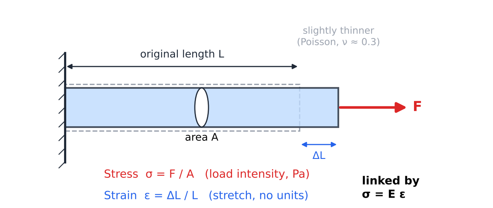
Deeper dive
This is a material law, not a derivation: a tensile test shows a straight line from the origin up to the proportional limit, and its slope is \(E\). Steel ≈ 200 GPa, aluminum ≈ 69 GPa, titanium ≈ 114 GPa, regardless of alloy or heat treatment.
It breaks past yield (the curve flattens), for rubber and polymers (nonlinear, time-dependent), and for composites, where \(E\) depends on direction. Heat treating changes strength, not \(E\).
Example: 10 kN on a 10 mm steel rod. \(A = 78.5\) mm², \(\sigma = 127\) MPa, \(\varepsilon = 127/200{,}000 = 6.4\times10^{-4}\) (637 µε). Halve the diameter and stress goes up 4×.
In the interview
Classic trap: \"Which is stiffer, a 4130 tube or a mild-steel tube of the same size?\" Same \(E\), same stiffness. Alloy choice buys strength, not stiffness.
Axial stretch\(\delta = \dfrac{FL}{EA}\)
How much a bar stretches under an axial load. It's just Hooke's law with \(\sigma = F/A\) and \(\varepsilon = \delta/L\) substituted in.
- \(\delta\): elongation (mm, in)
- \(F\): axial force (N, lbf)
- \(L\): length (mm, in)
- \(E\): Young's modulus (MPa = N/mm², psi)
- \(A\): cross-section area (mm², in²)
Deeper dive
Derivation: \(\varepsilon = \sigma/E = F/(EA)\), and \(\delta = \varepsilon L\). Assumes uniform section, load through the centroid, linear-elastic. For a stepped bar, add the pieces: \(\delta = \sum F_iL_i/(E_iA_i)\).
Scaling: linear in everything. Double \(L\) → 2× stretch. Double diameter → 4× area → ¼ the stretch. Swap steel for aluminum (\(E\) 200 → 69 GPa) → 2.9× the stretch.
Example: 10 kN on a 10 mm steel rod 1 m long: \(\delta = 10{,}000 \times 1000 / (200{,}000 \times 78.5) = 0.64\) mm. Small, which is why axial members are the stiff way to carry load.
In the interview
Use it for bolt and tie-rod stretch. In a bolted joint the bolt is the softer spring; long thin bolts stretch more, which actually helps hold preload.
Stiffness\(k_{\text{axial}} = \dfrac{EA}{L} \quad k_{\theta} = \dfrac{GJ}{L} \quad k_{\text{cant}} = \dfrac{3EI}{L^3}\)
Stiffness is load per unit deflection. These three cover the basic ways a member carries load: pulling, twisting, and bending as a cantilever.
- \(k_{\text{axial}}\): axial stiffness (N/mm)
- \(k_\theta\): torsional stiffness (N·m/rad)
- \(k_{\text{cant}}\): tip stiffness of a cantilever (N/mm)
- \(E,\ G\): Young's and shear modulus (MPa)
- \(A,\ I,\ J\): area, area moment, polar moment (mm², mm⁴)
- \(L\): length (mm)
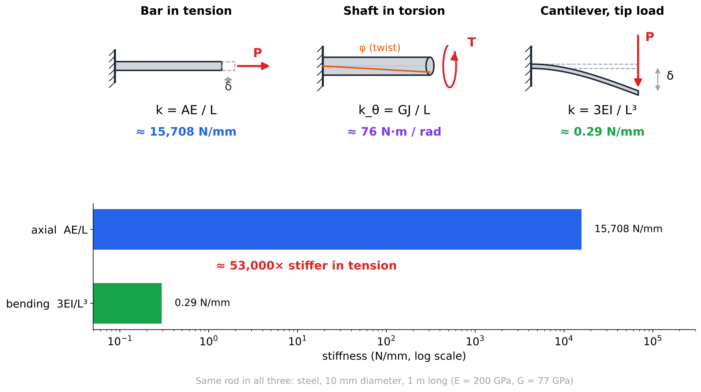
Deeper dive
Each one is load divided by the matching deflection formula: \(\delta = FL/EA\), \(\theta = TL/GJ\), \(\delta = FL^3/3EI\). Springs in series add as \(1/k\), in parallel add directly.
Scaling is the point. Axial and torsion go as \(1/L\); bending goes as \(1/L^3\). Double a cantilever's length → ⅛ the stiffness. Double a round bar's diameter → 4× axial, 16× torsional and bending.
Example, 10 mm steel rod, 1 m: \(k_{\text{axial}} = 15{,}700\) N/mm, \(k_\theta = 75.6\) N·m/rad, \(k_{\text{cant}} = 0.29\) N/mm. Design lesson: triangulate so members see tension/compression, not bending.
In the interview
Ties to Baja: wheel rate is spring rate × motion ratio², and every compliant link (tabs, control arms) adds a series spring that softens the real rate.
Shear modulus\(G = \dfrac{E}{2(1+\nu)} \quad \nu \approx 0.3\)
Links shear stiffness to tensile stiffness for an isotropic material, so you only need \(E\) and Poisson's ratio \(\nu\) to get \(G\).
- \(G\): shear modulus (GPa)
- \(E\): Young's modulus (GPa)
- \(\nu\): Poisson's ratio, \(-\varepsilon_{\text{lat}}/\varepsilon_{\text{axial}}\) (dimensionless)
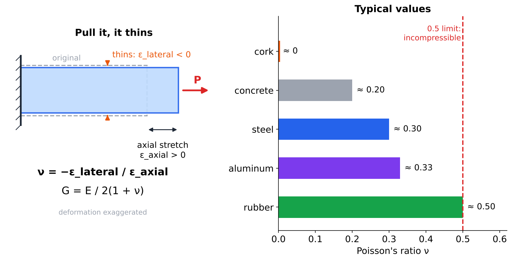
Deeper dive
Where it comes from: pure shear \(\tau\) is the same as tension \(+\tau\) and compression \(-\tau\) at 45°. Writing the 45° strain with Hooke's law in both directions (including the Poisson term) and matching it to \(\gamma/2\) gives \(G = E/2(1+\nu)\).
Valid only for isotropic materials. Composites, wood, and 3D-printed parts have direction-dependent properties, and this relation doesn't hold. \(\nu\) must be between −1 and 0.5; 0.5 means incompressible (rubber).
Numbers: steel 200/(2·1.3) = 77 GPa; aluminum 69/(2·1.33) = 26 GPa; titanium 114/(2·1.34) = 43 GPa. Rule of thumb: \(G \approx 0.38E\) for metals.
In the interview
Shows up whenever you need torsional stiffness \(GJ/L\) and only have a datasheet \(E\). Quick sanity check: \(G\) is always well under \(E\).
Strain energy\(U = \tfrac12 F\delta = \dfrac{F^2 L}{2EA}\)
The elastic energy stored in a loaded bar: the area under the linear force-deflection line. Used for impact problems and for energy methods like Castigliano.
- \(U\): strain energy (J = N·m, or N·mm)
- \(F\): axial force (N)
- \(\delta\): elongation (mm)
- \(L,\ E,\ A\): length, modulus, area
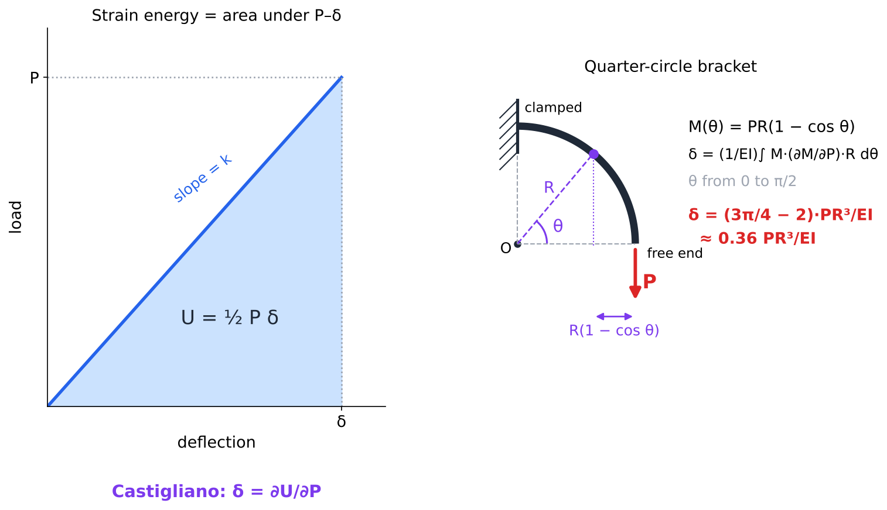
Deeper dive
Derivation: load rises from 0 to \(F\) linearly, so work = average force × distance = \(\tfrac12 F\delta\). Substitute \(\delta = FL/EA\) to get \(F^2L/2EA\). Per unit volume it's \(\sigma^2/2E\).
Impact flip side: if a fixed energy \(U\) must be absorbed, \(\sigma = \sqrt{2EU/(AL)}\). Stress drops with the square root of volume, so a longer or bigger member survives the same hit at lower stress. That is why impact bolts get necked-down shanks: the whole shank stretches and stores energy, not just the threads.
Example: 10 kN on a 10 mm, 1 m steel rod: \(\delta = 0.64\) mm, \(U = \tfrac12 \times 10{,}000 \times 0.64 = 3{,}180\) N·mm \(= 3.2\) J.
In the interview
Direct tie-in to combat robot weapons: the stored spinner energy has to go somewhere, and \(U = \tfrac12 F\delta\) sets impact force. A stiffer target means a shorter \(\delta\) and a bigger peak force.
Thermal, blocked\(\varepsilon = \alpha\Delta T \qquad \sigma = -E\alpha\Delta T\)
A part that gets hotter wants to grow by \(\alpha\Delta T\). If walls stop it, the blocked growth turns into stress, compressive when heated.
- \(\varepsilon\): free thermal strain (dimensionless)
- \(\alpha\): coefficient of thermal expansion (1/°C)
- \(\Delta T\): temperature change (°C or K)
- \(\sigma\): thermal stress if fully blocked (MPa)
- \(E\): Young's modulus (MPa)
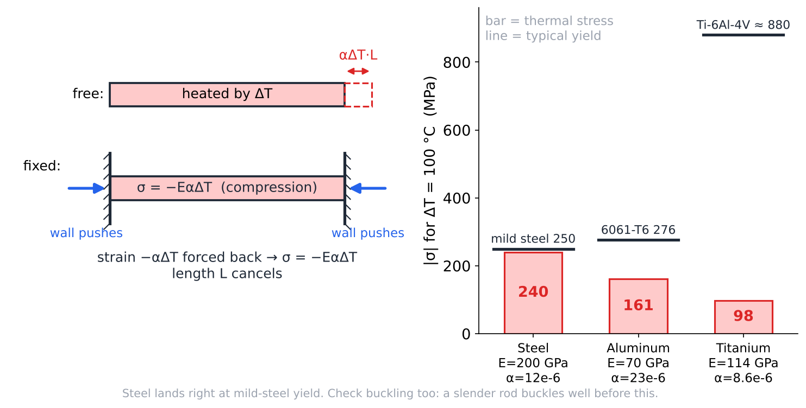
Deeper dive
Derivation: free growth is \(\alpha\Delta T L\). The walls push it back by the same amount, which is a mechanical strain of \(-\alpha\Delta T\). Hooke's law gives \(\sigma = -E\alpha\Delta T\).
Assumes perfectly rigid walls. Real supports have finite stiffness, so actual stress is lower (springs in series). Long slender bars usually buckle first. Mismatched materials bolted together (aluminum on steel) see the same effect from the difference \(\Delta\alpha\).
Example, \(\Delta T = 100\) °C: steel \(200{,}000 \times 12\times10^{-6} \times 100 = 240\) MPa, right at mild-steel yield. Aluminum: \(70{,}000 \times 23\times10^{-6}\times100 = 161\) MPa.
In the interview
Common question: \"Steel rail between two walls, heated, what happens?\" Answer: compressive stress \(E\alpha\Delta T\), independent of length, then check buckling. Relevant to the FLOAT O-ring housing too: mismatched \(\alpha\) changes squeeze with water temperature.
Von Mises\(\sigma_{vm} = \sqrt{\tfrac12\left[(\sigma_1-\sigma_2)^2+(\sigma_2-\sigma_3)^2+(\sigma_3-\sigma_1)^2\right]}\)
Collapses a 3D stress state into one number you compare against the uniaxial yield strength. Yield when \(\sigma_{vm} \ge \sigma_y\).
- \(\sigma_{vm}\): von Mises equivalent stress (MPa)
- \(\sigma_1, \sigma_2, \sigma_3\): principal stresses (MPa)
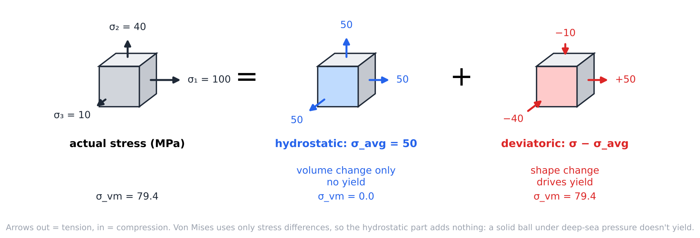
Deeper dive
Origin: distortion-energy theory. Split strain energy into a volume-change part and a shape-change part. Metals yield by slip, which is shape change, so set the distortion energy equal to its value in a tensile test at yield. That gives this formula.
Because it uses only differences, pure hydrostatic pressure gives \(\sigma_{vm} = 0\). Good for ductile metals. Wrong for brittle materials (use max normal stress or Mohr-Coulomb) and for fatigue on its own.
Example: \(\sigma_1 = 100,\ \sigma_2 = 40,\ \sigma_3 = 10\) MPa. Differences 60, 30, −90. \(\tfrac12(3600 + 900 + 8100) = 6300\), so \(\sigma_{vm} = 79.4\) MPa.
In the interview
FEA plots default to von Mises. Know that it's always positive, so it can't tell you tension from compression; check principal stresses for crack-driving tension and for buckling.
Bend + twist\(\sigma_{vm} = \sqrt{\sigma^2 + 3\tau^2}\)
Von Mises for the most common shaft case: one normal stress (bending or axial) plus one shear stress (torsion), with everything else zero.
- \(\sigma_{vm}\): von Mises equivalent stress (MPa)
- \(\sigma\): normal stress, usually bending \(Mc/I\) (MPa)
- \(\tau\): shear stress, usually torsion \(Tc/J\) (MPa)
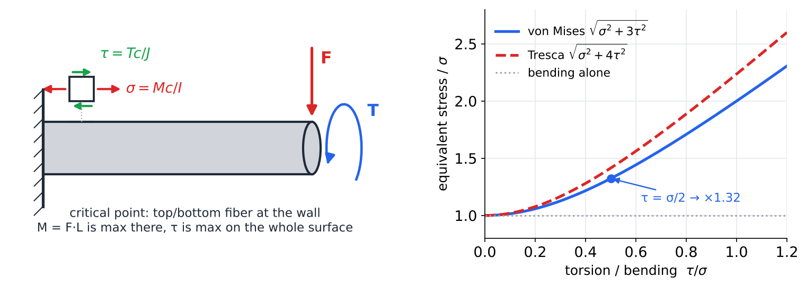
Deeper dive
Derivation: with only \(\sigma_x = \sigma\) and \(\tau_{xy} = \tau\), principals are \(\sigma/2 \pm \sqrt{(\sigma/2)^2 + \tau^2}\) and \(\sigma_3 = 0\). Plug into the full von Mises formula and it simplifies to \(\sqrt{\sigma^2 + 3\tau^2}\). Tresca gives \(\sqrt{\sigma^2 + 4\tau^2}\), slightly more conservative.
For a solid round shaft both stresses peak at the surface, so \(\sigma_{vm} = \tfrac{32}{\pi d^3}\sqrt{M^2 + 0.75T^2}\). Pure shear: \(\sigma_{vm} = \sqrt3\,\tau\), so shear yield is \(0.577\sigma_y\).
Example: 25 mm shaft, \(M = 200\) N·m, \(T = 150\) N·m. \(\sigma = 130\) MPa, \(\tau = 48.9\) MPa, \(\sigma_{vm} = \sqrt{130^2 + 3(48.9)^2} = 155\) MPa.
In the interview
The go-to for any shaft, axle, or steering column check. Trap: adding \(\sigma + \tau\) directly, or forgetting the factor 3.
Tresca\(\tau_{max} = \dfrac{\sigma_1 - \sigma_3}{2} \le \dfrac{\sigma_y}{2}\)
Maximum shear stress criterion: a ductile metal yields when the biggest shear stress anywhere reaches half its tensile yield.
- \(\tau_{max}\): absolute max shear stress (MPa)
- \(\sigma_1,\ \sigma_3\): largest and smallest principal stresses (MPa)
- \(\sigma_y\): tensile yield strength (MPa)
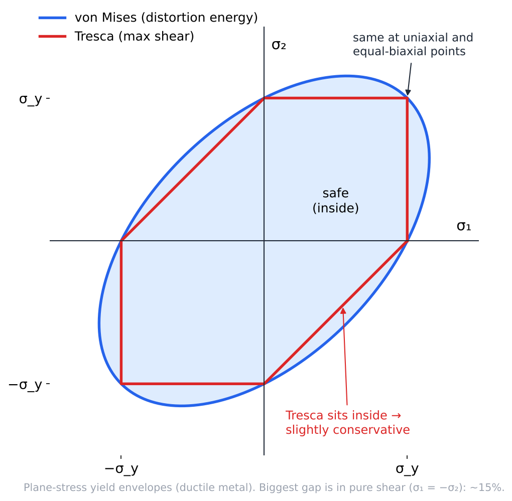
Deeper dive
Origin: in a tensile test at yield, \(\sigma_1 = \sigma_y\) and \(\sigma_2 = \sigma_3 = 0\), so \(\tau_{max} = \sigma_y/2\). Assume yield happens at that same shear in any stress state. The largest Mohr's circle spans \(\sigma_1\) to \(\sigma_3\).
The trap: in plane stress \(\sigma_3\) isn't missing, it's zero. If both in-plane principals are positive, the max shear is \(\sigma_1/2\), not \((\sigma_1 - \sigma_2)/2\). A thin pressure vessel has \(\tau_{max} = pr/2t\), not \(pr/4t\).
Tresca vs von Mises: in pure shear Tresca allows \(\tau = 0.5\sigma_y\), von Mises \(0.577\sigma_y\), about 15% apart. Elsewhere they agree within that.
In the interview
Expect \"Tresca or von Mises?\" Answer: von Mises fits test data for ductile metals better; Tresca is simpler and conservative, and some codes require it.
Principal\(\sigma_{1,2} = \dfrac{\sigma_x+\sigma_y}{2} \pm \sqrt{\left(\dfrac{\sigma_x-\sigma_y}{2}\right)^2 + \tau_{xy}^2}\)
Rotating a 2D stress element until shear vanishes gives the principal stresses, the largest and smallest normal stresses at that point.
- \(\sigma_{1,2}\): principal stresses (MPa)
- \(\sigma_x,\ \sigma_y\): normal stresses on x and y faces (MPa)
- \(\tau_{xy}\): shear stress on those faces (MPa)
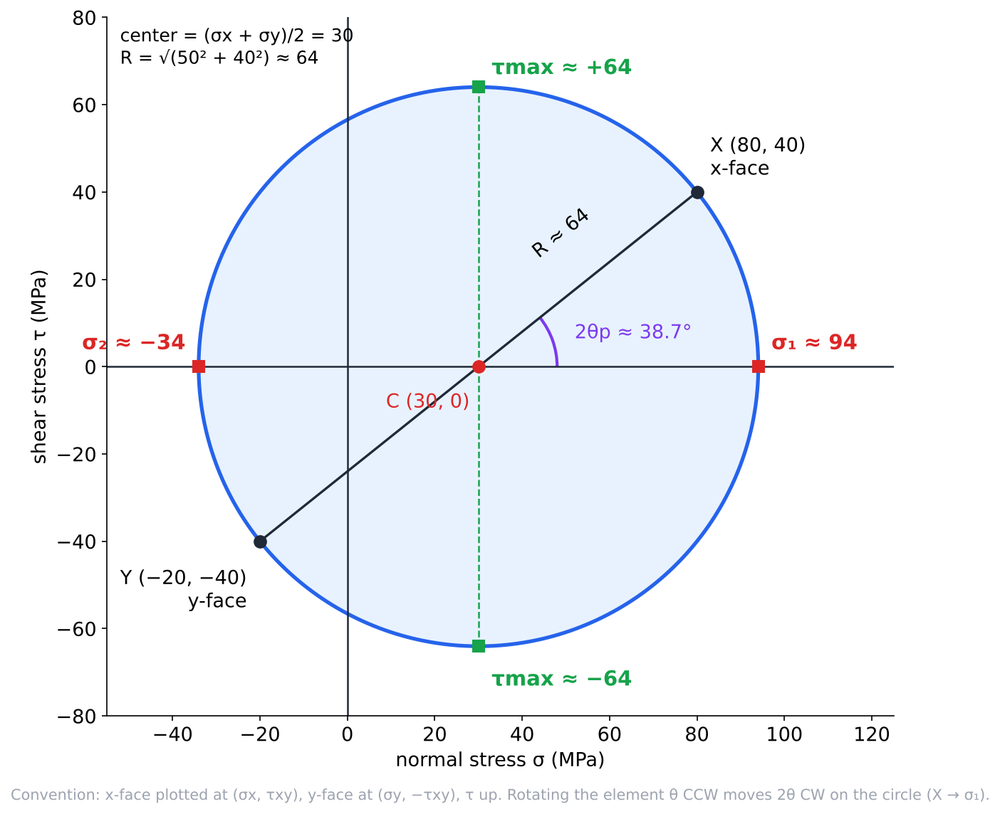
Deeper dive
Derivation: stress transformation gives \(\sigma(\theta)\). Setting \(d\sigma/d\theta = 0\) gives \(\tan 2\theta_p = 2\tau_{xy}/(\sigma_x - \sigma_y)\), and plugging back gives this formula. Same thing as Mohr's circle: center \((\sigma_x+\sigma_y)/2\), radius \(R\).
In-plane max shear equals \(R\), on planes 45° from the principal planes. In plane stress there's a third principal \(\sigma_3 = 0\); check it before quoting absolute max shear.
Example: \(\sigma_x = 80,\ \sigma_y = -20,\ \tau_{xy} = 40\) MPa. Center 30, \(R = \sqrt{50^2 + 40^2} = 64\). \(\sigma_1 = 94\), \(\sigma_2 = -34\) MPa, \(\theta_p = 19.3°\).
In the interview
Notation trap on this sheet: here \(\sigma_y\) is the stress on the y-face, not yield strength. Interviewers like asking you to sketch Mohr's circle from a strain-gauge rosette reading.
Steel blocked, 100°C ≈ 240 MPa (near mild-steel yield).
Beams
| Case | \(\delta_{max}\) | \(M_{max}\) |
|---|---|---|
| Cantilever, tip F | \(\dfrac{FL^3}{3EI}\) | \(FL\) |
| Cantilever, uniform (total F) | \(\dfrac{FL^3}{8EI}\) | \(\dfrac{FL}{2}\) |
| Simply supported, center F | \(\dfrac{FL^3}{48EI}\) | \(\dfrac{FL}{4}\) |
| Simply supported, uniform | \(\dfrac{5FL^3}{384EI}\) | \(\dfrac{FL}{8}\) |
| Fixed-fixed, center F | \(\dfrac{FL^3}{192EI}\) | \(\dfrac{FL}{8}\) |
| Fixed-fixed, uniform | \(\dfrac{FL^3}{384EI}\) | \(\dfrac{FL}{12}\) |
The tableHow to read and use these six cases
Max deflection and max moment for the six standard beam cases. Most real beams can be bounded or superposed from these.
- \(\delta\): max deflection (mm)
- \(F\): total load; for uniform load \(F = wL\) (N)
- \(L\): span (mm)
- \(E\): Young's modulus (MPa)
- \(I\): area moment of inertia (mm⁴)
- \(M_{max}\): max bending moment (N·mm)
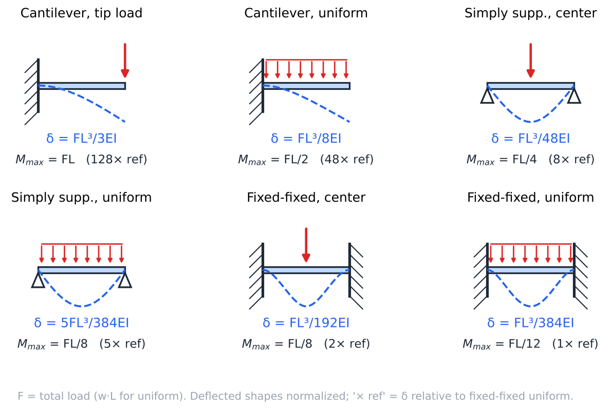
Deeper dive
Origin: integrate \(EIv'' = M(x)\) twice and apply boundary conditions (cantilever: \(v = v' = 0\) at the wall; pinned: \(v = 0\); fixed: \(v = v' = 0\)). Fixed-fixed cases are statically indeterminate; the slope conditions find the end moments.
Scaling: all go as \(FL^3/EI\). Double \(L\) → 8× deflection (at constant total load). Fixing the ends of a simply supported beam cuts center-load deflection 4× and halves \(M_{max}\). Fixed-fixed uniform max moment \(FL/12\) is at the ends, not the middle. Real \"fixed\" joints are partly flexible, so the truth is between pinned and fixed.
Example: 25 × 25 mm steel bar, 1 m, 500 N. Cantilever tip: \(I = 32{,}552\) mm⁴, \(\delta = 500 \times 10^9/(3 \times 200{,}000 \times 32{,}552) = 25.6\) mm. Fixed-fixed center: 0.40 mm.
In the interview
Memorize the cantilever and simply supported numbers (3, 48, 384). Interviewers often ask which case a real part is closest to; say how you'd bound it between two cases.
Bending\(\sigma = \dfrac{Mc}{I}\)
The flexure formula: bending stress grows linearly from zero at the neutral axis to a maximum at the outer fiber.
- \(\sigma\): bending stress (MPa)
- \(M\): bending moment at the section (N·mm)
- \(c\): distance from neutral axis to outer fiber (mm)
- \(I\): area moment of inertia about the neutral axis (mm⁴)
- \(S = I/c\): section modulus (mm³)
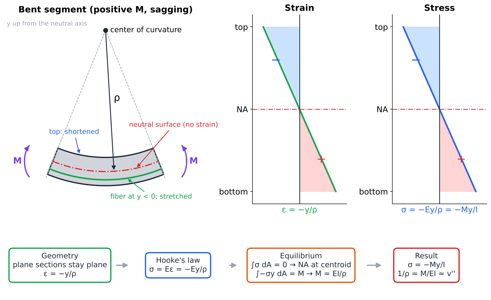
Deeper dive
Derivation: plane sections stay plane → \(\varepsilon = -y/\rho\). Hooke → \(\sigma = -Ey/\rho\). Zero net force puts the neutral axis at the centroid. The moment balance \(M = \int \sigma y\,dA = EI/\rho\) eliminates \(\rho\): \(\sigma = My/I\).
Assumes linear-elastic, symmetric section, slender beam (length ≫ depth), no local buckling. Breaks near load points, holes, and fillets (use \(K_t\)) and for curved beams.
Example: 1.00 in × 0.065 in wall steel tube (25.4 × 1.65 mm), \(I = 8{,}720\) mm⁴, \(c = 12.7\) mm. \(M = 150\) N·m → \(\sigma = 150{,}000 \times 12.7 / 8{,}720 = 218\) MPa.
In the interview
Baja frame and suspension members are round tubes, so this plus \(I\) for a tube is the core hand calc. Always state where max \(M\) is before computing stress.
Shear\(\tau = \dfrac{VQ}{Ib} \quad \text{rect: } \tau_{max} = 1.5\dfrac{V}{A}\)
Transverse shear stress in a beam. Unlike bending stress, it's zero at the top and bottom and peaks at the neutral axis.
- \(\tau\): shear stress at a height in the section (MPa)
- \(V\): shear force at that section (N)
- \(Q\): first moment of the area beyond the cut, about the NA: \(A'\bar y'\) (mm³)
- \(I\): area moment of the whole section (mm⁴)
- \(b\): width at the cut (mm)
- \(A\): total section area (mm²)
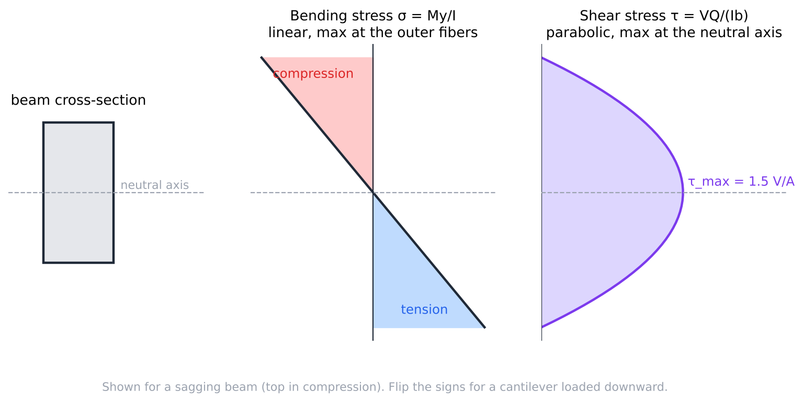
Deeper dive
Origin: bending stress changes along the beam as \(M\) changes. Take a slice above a cut: the unbalanced bending force over that area (\(dM/dx \cdot Q/I = VQ/I\)) must be carried by shear on the cut of width \(b\).
For a rectangle, \(Q\) is max at the NA, giving \(\tau_{max} = 1.5V/A\). Solid circle: \(\tfrac43 V/A\). Thin tube: \(2V/A\). I-beam: the web carries almost all of it, \(\tau \approx V/A_{web}\).
Example: 20 × 40 mm bar, \(V = 10\) kN. Average \(V/A = 12.5\) MPa; peak \(1.5 \times 12.5 = 18.75\) MPa. For long beams this is tiny next to bending stress.
In the interview
Trap: using \(V/A\) and calling it the max. Shear matters for short, deep beams, thin webs, and bolted or glued joints along the neutral axis.
Rectangle\(I = \dfrac{bh^3}{12}\)
Area moment of inertia of a rectangle about its centroid. It measures how well the shape resists bending in the direction \(h\) is measured.
- \(I\): area moment of inertia (mm⁴, in⁴)
- \(b\): width, parallel to the bending axis (mm)
- \(h\): depth, in the bending direction (mm)
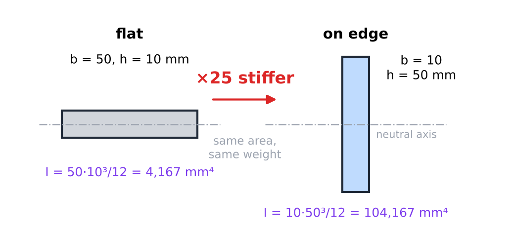
Deeper dive
Derivation: \(I = \int y^2\,dA = \int_{-h/2}^{h/2} y^2\,b\,dy = bh^3/12\). Material far from the axis counts with \(y^2\), which is why depth wins.
Scaling: double \(h\) → 8× \(I\) (and 8× stiffer); double \(b\) → 2×. Section modulus \(S = bh^2/6\), so strength goes as \(h^2\). Limit: very deep thin sections buckle sideways (lateral-torsional buckling).
Example: 50 × 10 mm flat: \(I = 50 \times 10^3/12 = 4{,}167\) mm⁴. On edge: \(10 \times 50^3/12 = 104{,}167\) mm⁴, 25× more. \(S\) goes 833 → 4,167 mm³, 5× stronger.
In the interview
Classic: \"Why is a joist placed on edge?\" or \"Ruler flat vs on edge.\" Answer with \(h^3\). Also be clear which dimension is \(h\): the one in the direction of the load.
Round / tube\(I = \dfrac{\pi d^4}{64} \qquad I = \dfrac{\pi (D_o^4 - D_i^4)}{64}\)
Area moment of inertia for a solid round bar and a hollow tube. Since \(I\) goes as \(D^4\), the outer material does most of the work.
- \(I\): area moment of inertia (mm⁴)
- \(d\): solid bar diameter (mm)
- \(D_o,\ D_i\): tube outer and inner diameter (mm)
- \(J = 2I\): polar moment for round sections (mm⁴)
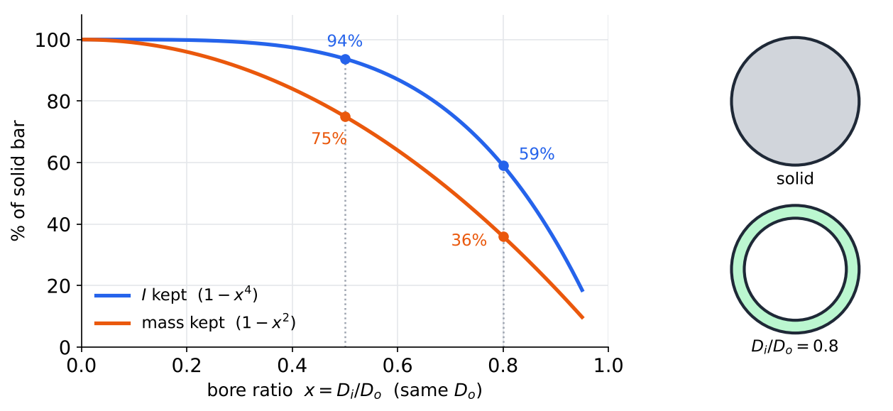
Deeper dive
Derivation: in polar coordinates \(J = \int r^2 dA = \pi d^4/32\). By symmetry \(I_x = I_y = J/2 = \pi d^4/64\). A tube is the outer circle minus the inner one.
Scaling: \(I \propto D^4\). Double the diameter → 16× stiffer. For a tube with fixed \(D_o\), \(I\) kept \(= 1 - x^4\), mass kept \(= 1 - x^2\), with \(x = D_i/D_o\). Limit: very thin walls dent or buckle locally (keep \(D/t\) sane).
Example: 25 mm solid: \(I = 19{,}175\) mm⁴. 25 OD × 20 ID tube: \(I = 11{,}320\) mm⁴ (59%) at 36% of the weight.
In the interview
Explains why Baja frames and steering columns are tubes. Watch the \(d\) vs \(r\) trap: \(\pi r^4/4 = \pi d^4/64\).
Parallel axis\(I = \bar I + A d^2 \qquad r = \sqrt{I/A}\)
Moves an area moment of inertia from a part's own centroid to a parallel axis. It's how you build \(I\) for I-beams, T-sections, and multi-piece sections.
- \(I\): area moment about the new axis (mm⁴)
- \(\bar I\): area moment of the piece about its own centroid (mm⁴)
- \(A\): area of the piece (mm²)
- \(d\): distance between the two parallel axes (mm)
- \(r\): radius of gyration (mm)
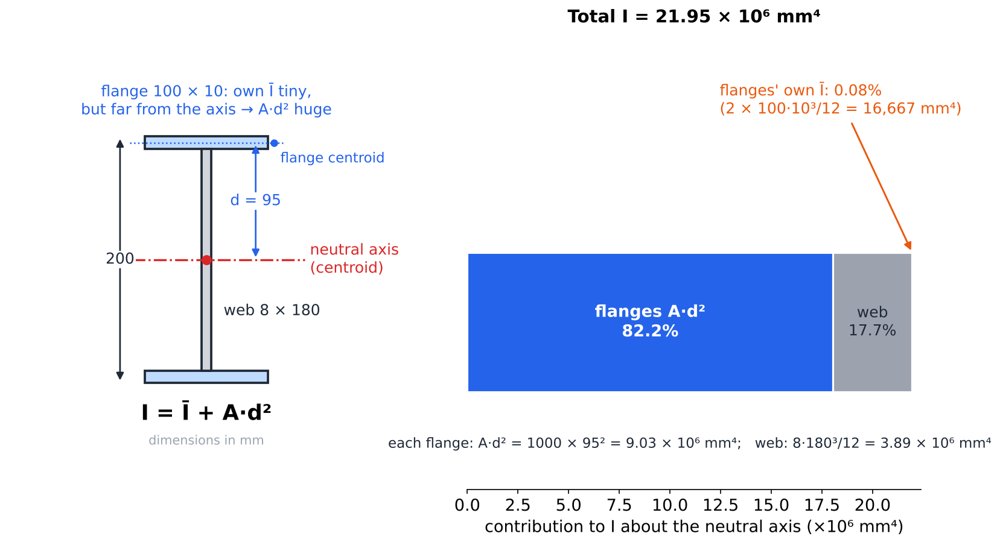
Deeper dive
Derivation: \(I = \int (y' + d)^2 dA = \int y'^2 dA + 2d\int y' dA + d^2 A\). The middle term is zero because \(y'\) is measured from the piece's centroid. Only valid when shifting from a centroidal axis.
Workflow: find the composite centroid first, then sum \(\bar I_i + A_i d_i^2\) for each piece. Radius of gyration \(r = \sqrt{I/A}\) is the \"effective\" distance of the area from the axis and sets column slenderness \(L/r\).
Example: 200 mm deep I-beam, flanges 100 × 10, web 8 × 180. Each flange \(Ad^2 = 1000 \times 95^2 = 9.03\times10^6\); web \(3.89\times10^6\); total \(21.95\times10^6\) mm⁴. \(A = 3{,}440\) mm², \(r = 79.9\) mm.
In the interview
Trap: applying it between two non-centroidal axes, or forgetting to locate the composite centroid first on unsymmetric sections like a T.
Plastic hinge\(M_p = \sigma_y Z \quad \text{rect: } Z = 1.5\,S\)
The moment that makes a whole section yield, top to bottom. Past this the beam forms a hinge and rotates without carrying more moment.
- \(M_p\): plastic moment (N·mm)
- \(\sigma_y\): yield strength (MPa)
- \(Z\): plastic section modulus (mm³)
- \(S = I/c\): elastic section modulus (mm³)
- \(Z/S\): shape factor (dimensionless)
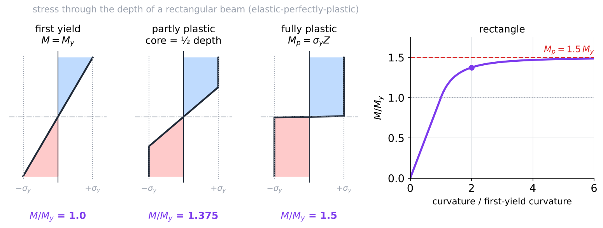
Deeper dive
Derivation: assume elastic-perfectly-plastic material. Fully yielded, every fiber is at \(\pm\sigma_y\). The neutral axis moves to split the area in half, and \(M_p = \sigma_y (A_c \bar y_c + A_t \bar y_t) = \sigma_y Z\). Rectangle: \(Z = bh^2/4\) vs \(S = bh^2/6\), ratio 1.5.
Shape factors: solid circle 1.70, thin tube 1.27, I-beam about 1.1 to 1.15. I-beams are efficient elastically, so they have less reserve. Ignores strain hardening (real reserve is a bit higher) and assumes no local buckling.
Example: 20 × 40 mm 6061-T6 bar, \(\sigma_y = 276\) MPa. \(S = 5{,}333\) mm³ → \(M_y = 1.47\) kN·m. \(Z = 8{,}000\) mm³ → \(M_p = 2.21\) kN·m.
In the interview
Good for overload and crash cases (Baja rollover, combat robot hits) where permanent bending is acceptable but collapse is not. Say clearly: design to \(M_y\) for function, \(M_p\) for ultimate collapse.
Torsion and buckling
Torsion\(\tau = \dfrac{Tr}{J} \qquad \theta = \dfrac{TL}{GJ}\)
A shaft under torque \(T\) carries shear stress that grows linearly from zero at the center to a max at the surface, and it twists by an angle proportional to length and inversely proportional to torsional stiffness \(GJ\).
- \(\tau\): shear stress at radius \(r\) (Pa, psi)
- \(T\): applied torque (N·m, lb·in)
- \(r\): radius from the axis (m, in); max at outer radius
- \(J\): polar moment of area (m⁴, in⁴)
- \(\theta\): twist angle (rad)
- \(L\): shaft length (m, in)
- \(G\): shear modulus (Pa, psi); steel ≈ 79 GPa
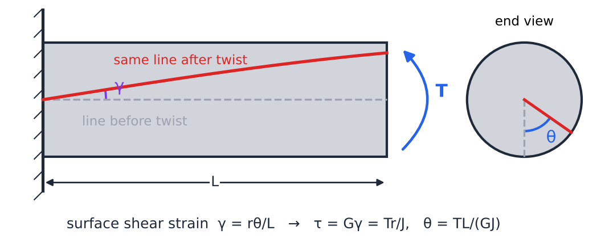
Deeper dive
Derivation: plane sections stay plane and radii stay straight, so shear strain is \(\gamma = r\theta/L\). Then \(\tau = G\gamma = G r\theta/L\). Summing \(\int \tau r\,dA = T\) gives \(T = G\theta J/L\), so \(\theta = TL/(GJ)\) and \(\tau = Tr/J\).
Assumptions: circular (solid or hollow) section, linear elastic, uniform torque, away from ends and steps. Non-circular sections warp and these formulas don't apply; shoulders and keyways add stress concentration.
Scaling: \(\theta \propto L\), and since \(J \propto d^4\), doubling diameter cuts twist 16x and max stress 8x.
Example: 25 mm steel shaft, \(T\) = 200 N·m, \(L\) = 0.5 m: \(J\) = 3.83×10⁻⁸ m⁴, \(\tau_{max}\) = 65.2 MPa, \(\theta\) = 0.033 rad = 1.9°.
In the interview
Classic question: where is the shear stress max and why hollow shafts are efficient (the core carries almost nothing). Ties to the Baja steering column and any driveline shaft: check both stress and twist, since twist sets steering feel.
Solid shaft\(J = \dfrac{\pi d^4}{32} \qquad \tau_{max} = \dfrac{16T}{\pi d^3}\)
Plugging the solid-circle polar moment into \(\tau = Tr/J\) with \(r = d/2\) gives the max shear stress directly from torque and diameter, which is the go-to shaft sizing formula.
- \(J\): polar moment of area (m⁴, in⁴)
- \(d\): shaft diameter (m, in)
- \(\tau_{max}\): surface shear stress (Pa, psi)
- \(T\): torque (N·m, lb·in)
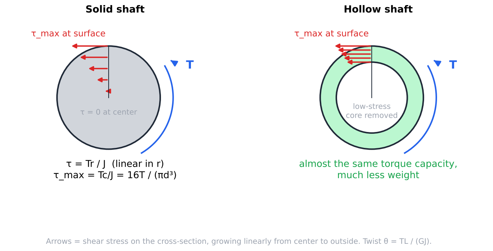
Deeper dive
Where it comes from: \(J = \int r^2 dA = \int_0^{d/2} r^2 (2\pi r)\,dr = \pi d^4/32\). Then \(\tau_{max} = T(d/2)/J = 16T/(\pi d^3)\). Hollow: \(J = \pi(d_o^4 - d_i^4)/32\).
Scaling: strength goes as \(d^3\), stiffness as \(d^4\). A 10% larger diameter gives 33% more torque capacity and 46% more torsional stiffness.
Sizing example: \(T\) = 500 N·m, allowable \(\tau\) = 100 MPa: \(d = (16T/\pi\tau)^{1/3}\) = 29.4 mm, so pick 30 mm, then check twist and fatigue.
Caveat: real shafts usually see bending plus torsion; combine with \(\sigma = 32M/(\pi d^3)\) via von Mises, and fatigue at shoulders usually governs, not static stress.
In the interview
Trap: forgetting \(J\) is the polar moment (\(\pi d^4/32\)), not \(I\) (\(\pi d^4/64\)); \(J = 2I\) for circles. Expect a follow-up asking you to size a hollow shaft of equal strength and compare weight.
Thin tube\(J_{closed} \approx 2\pi r^3 t \qquad J_{slit} \approx \dfrac{2\pi r t^3}{3}\)
For a thin-walled tube, a closed section carries torque as shear flow circulating around the whole loop, while slitting it lengthwise forces the shear to loop back across the thin wall, making it vastly floppier.
- \(J_{closed}\): torsion constant of a closed thin tube (m⁴, in⁴)
- \(J_{slit}\): torsion constant of the same tube slit open (m⁴, in⁴)
- \(r\): mean radius (m, in)
- \(t\): wall thickness (m, in)
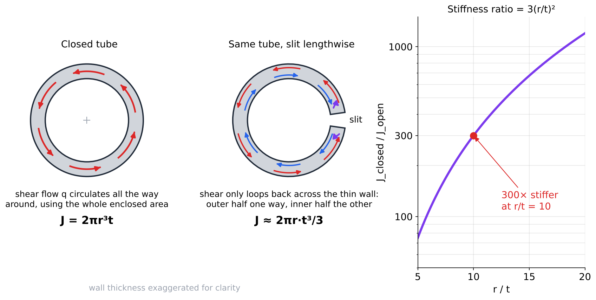
Deeper dive
Closed: from Bredt-Batho, \(J = 4A_m^2 t/s\); with \(A_m = \pi r^2\), \(s = 2\pi r\) this gives \(2\pi r^3 t\), which matches the exact \(\frac{\pi}{2}(r_o^4 - r_i^4)\) when \(t \ll r\).
Open: any thin open section has \(J \approx \sum b t^3/3\), with \(b\) the strip length. Unrolled, the slit tube is a strip of length \(2\pi r\), giving \(2\pi r t^3/3\).
Example: \(r\) = 12.5 mm, \(t\) = 1.25 mm: closed \(J\) = 1.53×10⁻⁸ m⁴, slit \(J\) = 5.1×10⁻¹¹ m⁴, a 300x drop from one saw cut.
When it breaks: thin-wall only (roughly \(r/t > 10\)); open sections also warp and can need warping-restraint analysis near fixed ends.
In the interview
Common prompt: 'why do torsion members use closed tubes, and what happens if you cut a slot?' Relevant to Baja chassis and suspension tubing, and to why C-channels are poor in torsion.
Closed ÷ slit\(3\left(\dfrac{r}{t}\right)^2 \;\;(\approx 300\times \text{ at } r/t=10)\)
Dividing the two thin-tube torsion constants gives the stiffness penalty of slitting a tube: it scales with the square of radius over thickness, so thinner walls lose more.
- \(r\): mean radius (m, in)
- \(t\): wall thickness (m, in)
- \(3(r/t)^2\): ratio \(J_{closed}/J_{slit}\) (dimensionless)
Deeper dive
Derivation: \(\dfrac{2\pi r^3 t}{2\pi r t^3/3} = 3\dfrac{r^2}{t^2}\). Same material, same weight, same bending stiffness; only torsion collapses.
Scaling: \(r/t\) = 10 gives 300x, \(r/t\) = 20 gives 1200x. The thinner and larger the tube, the more the closed loop matters.
Strength too: closed max shear is \(\tau = T/(2A_m t)\); open is \(\tau = 3T/(2\pi r t^2)\). The strength ratio is \(3r/t\), so 30x at \(r/t\) = 10. Stiffness suffers more than strength.
Design lesson: keep torsion paths closed. Cutouts, access holes and slots in torque tubes or box sections need doublers or a continuous loop elsewhere.
In the interview
A good number to quote from memory: 'about 300x at r/t of 10.' Interviewers like the follow-up that strength drops only about 30x, so the slit tube fails by excessive twist first.
Power\(P = T\omega \qquad \text{hp} = \dfrac{T_{\text{lb·ft}}\cdot\text{rpm}}{5252}\)
Power is torque times angular speed. The imperial shortcut divides lb·ft times rpm by 5252 to get horsepower.
- \(P\): power (W, hp)
- \(T\): torque (N·m, lb·ft)
- \(\omega\): angular speed (rad/s); \(\omega = 2\pi\,\text{rpm}/60\)
- 5252: \(33000/(2\pi)\), from 1 hp = 33,000 lb·ft/min
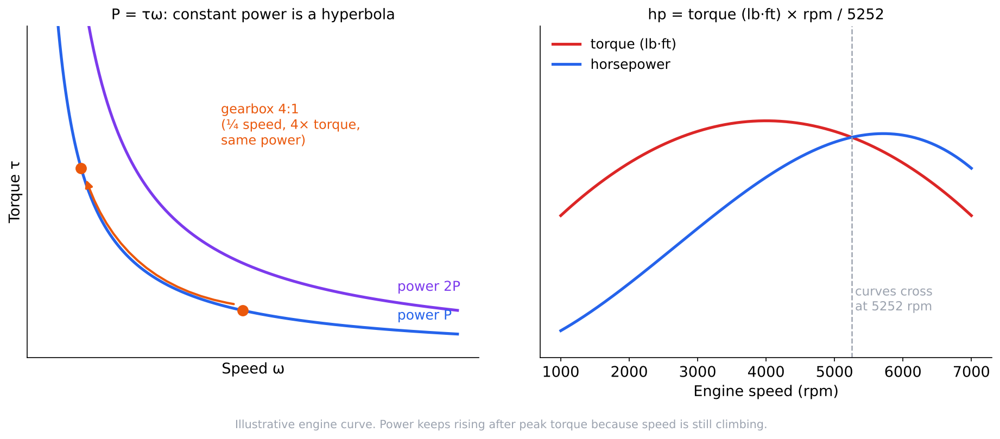
Deeper dive
Derivation: work per revolution is \(T\cdot 2\pi\), so power is \(2\pi T\cdot\text{rpm}\) per minute. Dividing by 33,000 lb·ft/min per hp gives \(\text{hp} = T\cdot\text{rpm}/5252\). That is also why torque and hp curves cross at 5252 rpm.
Gearing: an ideal reduction of \(N\):1 multiplies torque by \(N\) and divides speed by \(N\); power is conserved minus losses (~2-5% per gear mesh, more for belts/CVTs).
Examples: 10 hp at 3600 rpm is 14.6 lb·ft. SI: 20 N·m at 3000 rpm is \(\omega\) = 314 rad/s, so \(P\) = 6.28 kW.
Sizing link: for a shaft, get \(T = P/\omega\) first, then size with \(16T/(\pi d^3)\). Slow shafts after a reduction see the most torque and need the largest diameter.
In the interview
Typical trap is using rpm instead of rad/s in \(P = T\omega\) (off by 9.55x). Ties to Baja drivetrain torque at the axle after reduction, and combat robot weapon motor gearing.
Euler\(P_{cr} = \dfrac{\pi^2 EI}{(KL)^2} \qquad \sigma_{cr} = \dfrac{\pi^2 E}{(KL/r)^2}\)
Euler's formula gives the axial load at which a slender, straight, elastic column suddenly bows sideways. It depends on stiffness and length, not on material strength.
- \(P_{cr}\): critical buckling load (N, lbf)
- \(E\): Young's modulus (Pa, psi)
- \(I\): smallest area moment of inertia (m⁴, in⁴)
- \(K\): effective-length factor from end conditions (0.5 to 2)
- \(L\): column length (m, in)
- \(r = \sqrt{I/A}\): radius of gyration (m, in)
- \(\sigma_{cr}\): critical stress \(P_{cr}/A\) (Pa, psi)
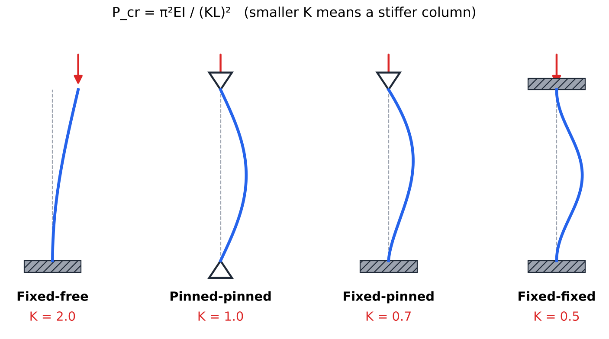
Deeper dive
Derivation: for a pinned-pinned column, \(EIy'' = -Py\). Solutions are \(\sin(\sqrt{P/EI}\,x)\); nonzero \(y\) with \(y(L) = 0\) needs \(\sqrt{P/EI}\,L = \pi\), so \(P_{cr} = \pi^2EI/L^2\). Other ends replace \(L\) with \(KL\).
Assumptions: perfectly straight, centered load, linear elastic up to buckling. Real columns with crookedness or eccentricity bend from the start and fail somewhat lower.
Scaling: double \(L\) gives 1/4 the load. Fixed-fixed (K = 0.5) is 4x pinned-pinned; fixed-free (K = 2) is 1/4. Use the weakest axis \(I\).
Example: 4130 tube 25.4 mm OD × 1.65 mm wall, pinned, 1.0 m: \(I\) = 8.72×10⁻⁹ m⁴, \(r\) = 8.4 mm, \(L/r\) = 119, \(P_{cr}\) = 17.6 kN (\(\sigma\) = 143 MPa, well under yield, so Euler is valid).
In the interview
Expect 'what K for these ends?' and 'which axis buckles?' Baja suspension links and pushrods in compression are rod-end (pinned) members, so K = 1 and L is the full pin-to-pin length.
Use Euler if\(\dfrac{KL}{r} > \sqrt{\dfrac{2\pi^2 E}{\sigma_y}} \;\;(\approx 126 \text{ mild steel})\)
Euler is only valid when the column is slender enough that it buckles before the material yields. This gives the transition slenderness; below it, use the Johnson parabola instead.
- \(KL/r\): effective slenderness ratio (dimensionless)
- \(E\): Young's modulus (Pa, psi)
- \(\sigma_y\): yield strength (Pa, psi)
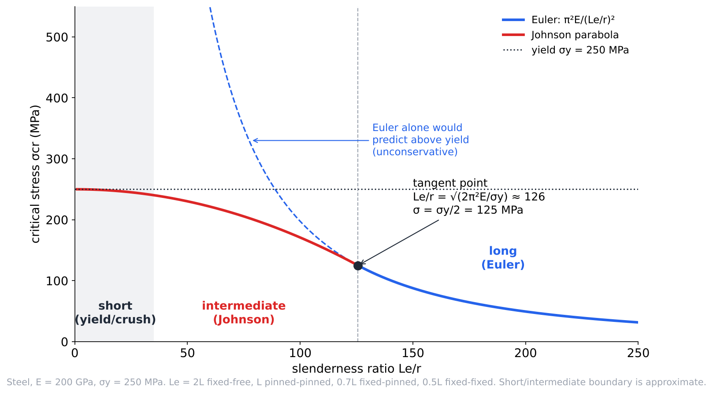
Deeper dive
Where it comes from: the Johnson parabola \(\sigma_{cr} = \sigma_y - \frac{1}{E}\left(\frac{\sigma_y}{2\pi}\frac{KL}{r}\right)^2\) is chosen to touch Euler tangentially. Setting them equal gives \(\sigma = \sigma_y/2\) and \((KL/r)_{c} = \sqrt{2\pi^2E/\sigma_y}\).
Material values: mild steel (200 GPa, 250 MPa) ≈ 126; 4130 normalized (205 GPa, 435 MPa) ≈ 96; 6061-T6 (69 GPa, 276 MPa) ≈ 70. Stronger material lowers the cutoff, because higher \(\sigma_y\) leaves more room for elastic buckling.
Example: the 4130 tube from the Euler row at 0.5 m: \(L/r\) = 59 < 96. Euler says 70.6 kN (573 MPa, above yield, wrong). Johnson gives 353 MPa, so \(P_{cr}\) ≈ 43 kN.
Short columns: at very low \(KL/r\) (roughly under 10-30) just check compressive yield or crushing.
In the interview
The trap is applying Euler to a stubby member and reporting a load above yield. Always compute \(KL/r\) first and compare to the cutoff before choosing the formula.
Thin tube local\(\sigma_{cr} \approx 0.6\,\dfrac{Et}{R}\)
A thin-walled cylinder in axial compression can wrinkle locally (shell buckling) at a stress set by wall thickness over radius, long before the whole tube buckles as a column.
- \(\sigma_{cr}\): classical axial buckling stress (Pa, psi)
- \(E\): Young's modulus (Pa, psi)
- \(t\): wall thickness (m, in)
- \(R\): tube radius (m, in)
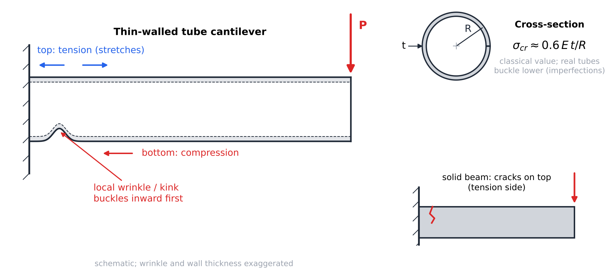
Deeper dive
Where it comes from: classical shell theory gives \(\sigma_{cr} = \dfrac{Et}{R\sqrt{3(1-\nu^2)}}\), which is \(0.605\,Et/R\) for \(\nu = 0.3\).
When it breaks: real shells are extremely imperfection-sensitive and test at 20-60% of this. NASA SP-8007 uses a knockdown \(\gamma = 1 - 0.901(1 - e^{-\phi})\), \(\phi = \frac{1}{16}\sqrt{R/t}\). At \(R/t\) = 450, \(\gamma\) ≈ 0.34. Internal pressure stabilizes the shell and raises it.
Scaling: linear in \(t/R\), so halving wall thickness halves the buckling stress (and quarters the load, since area also halves).
Example: 3.6 m diameter aluminum-lithium tank, \(t\) = 4 mm, \(E\) = 78 GPa: classical 104 MPa; with knockdown ≈ 35 MPa. For a small Al tube (\(R\) = 50 mm, \(t\) = 1 mm) classical is 840 MPa, above yield, so it yields first.
In the interview
Very relevant to launch vehicle structures: say the classical number and immediately mention the knockdown factor and pressure stabilization. Also explains why thin bike or chassis tubes kink on the compression side.
K = 2 fixed-free · 1 pinned-pinned · 0.7 fixed-pinned · 0.5 fixed-fixed. Below the Euler limit use Johnson. Real thin tubes buckle at 30–60% of the classical value.
Pressure vessels, rotating, plates
Cylinder\(\sigma_{hoop} = \dfrac{pr}{t} \qquad \sigma_{axial} = \dfrac{pr}{2t}\)
Internal pressure in a thin-walled cylinder creates hoop stress twice the axial stress, so the hoop direction governs wall thickness and cracks run lengthwise.
- \(\sigma_{hoop}\): circumferential stress (Pa, psi)
- \(\sigma_{axial}\): longitudinal stress (Pa, psi)
- \(p\): internal gauge pressure (Pa, psi)
- \(r\): radius, inner or mean (m, in)
- \(t\): wall thickness (m, in)
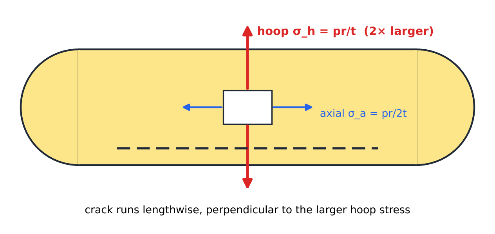
Deeper dive
Derivation: cut lengthwise: pressure on projected area \(2rL\) balances two walls, \(2\sigma_h tL = p\,2rL\), so \(\sigma_h = pr/t\). Cut across: \(p\pi r^2 = \sigma_a 2\pi r t\), so \(\sigma_a = pr/(2t)\).
Assumptions: thin wall (\(r/t > 10\), error ~5%), stress uniform through thickness, away from end caps and nozzles where bending adds discontinuity stresses.
Scaling: stress is linear in \(p\) and \(r\). Doubling diameter at the same pressure needs double the wall.
Example: air tank \(r\) = 3 in, \(t\) = 0.1 in, \(p\) = 150 psi: hoop = 4500 psi, axial = 2250 psi.
In the interview
Classic: 'which way does a hot dog split?' (lengthwise). For external pressure (like the FLOAT O-ring housing at depth), the same formula gives compressive stress, but collapse/buckling usually governs instead.
Sphere\(\sigma = \dfrac{pr}{2t}\)
A thin spherical shell under internal pressure has the same stress in every in-plane direction, equal to the cylinder's axial stress: half the cylinder hoop stress.
- \(\sigma\): membrane stress, equal in all tangent directions (Pa, psi)
- \(p\): internal gauge pressure (Pa, psi)
- \(r\): sphere radius (m, in)
- \(t\): wall thickness (m, in)
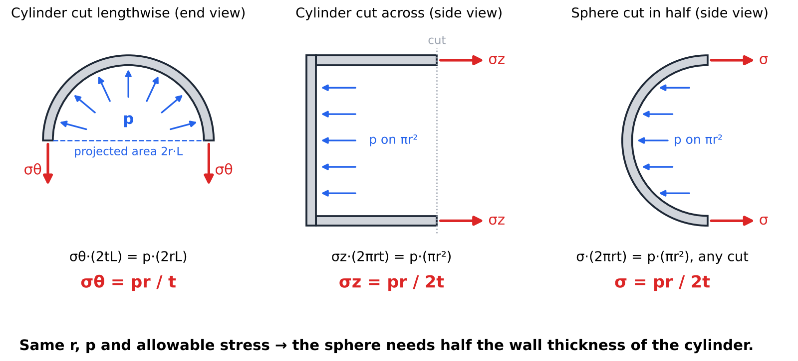
Deeper dive
Derivation: cut through the center: pressure force \(p\pi r^2\) balanced by wall force \(\sigma\,2\pi r t\), so \(\sigma = pr/(2t)\). By symmetry every cut gives the same answer.
Consequence: for the same \(p\), \(r\) and allowable stress, a sphere needs half the wall of a cylinder and stores the most volume per unit wall mass. That's why high-pressure gas bottles (COPVs, helium spheres) are spherical.
Example: same 150 psi, \(r\) = 3 in, \(t\) = 0.1 in as the cylinder row: 2250 psi everywhere, versus 4500 psi hoop for the cylinder.
Caveats: spheres are harder to manufacture and package; where a sphere joins a cylinder (hemispherical head), the different radial growth creates local bending.
In the interview
Interviewers like 'why are pressurant tanks spheres but propellant tanks cylinders?' Answer: spheres are mass-optimal for pressure, cylinders pack better in a fuselage and are easier to build long.
Abs. max shear\(\tau_{max} = \dfrac{pr}{2t} \;\;(\sigma_3 \approx 0)\)
For a thin-walled cylinder the largest shear stress is out of plane, between the hoop stress and the near-zero radial stress, not between hoop and axial.
- \(\tau_{max}\): absolute maximum shear stress (Pa, psi)
- \(\sigma_1 = pr/t\): hoop (largest principal)
- \(\sigma_2 = pr/2t\): axial
- \(\sigma_3 \approx 0\): radial (through-thickness)
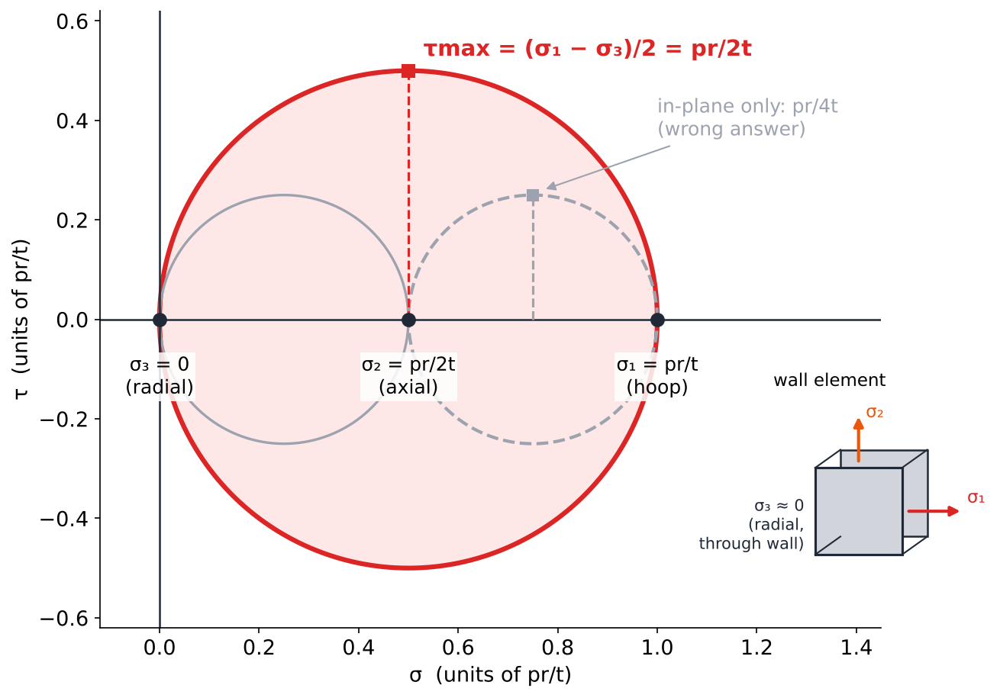
Deeper dive
Derivation: \(\tau_{max} = (\sigma_1 - \sigma_3)/2 = (pr/t - 0)/2 = pr/(2t)\). Using only the in-plane pair gives \((pr/t - pr/2t)/2 = pr/(4t)\), half the true value.
Why \(\sigma_3 \approx 0\): the radial stress goes from \(-p\) inside to 0 outside, and \(p \ll pr/t\) when \(r/t\) is large. Including it gives \(\tau_{max} \approx (pr/t + p)/2\).
Example: 150 psi, \(r\) = 3 in, \(t\) = 0.1 in: \(\tau_{max}\) = 2250 psi (in-plane-only answer would be 1125 psi).
Use: Tresca sizing sets \(\tau_{max} = \sigma_y/2\), so \(t = pr/\sigma_y\), the same as hoop-only. Von Mises with (pr/t, pr/2t, 0) gives \(\sigma_{vm} = 0.866\,pr/t\), slightly less conservative.
In the interview
This is a favorite trick question: the trap is the in-plane Mohr's circle. Say 'always draw all three circles; for plane stress the third principal is zero.'
Thick wall, bore\(\sigma_{hoop} = p\,\dfrac{b^2 + a^2}{b^2 - a^2}\)
For a thick-walled cylinder under internal pressure (Lamé), hoop stress is highest at the bore and falls toward the outside. This is the bore value.
- \(\sigma_{hoop}\): hoop stress at the bore (Pa, psi)
- \(p\): internal pressure (Pa, psi)
- \(a\): inner radius (m, in)
- \(b\): outer radius (m, in)
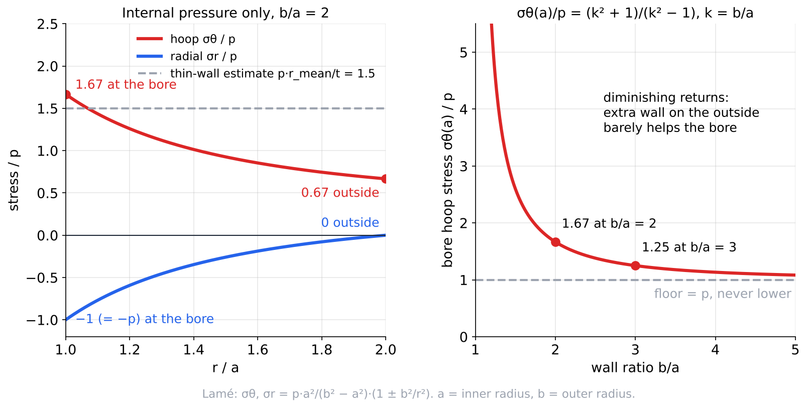
Deeper dive
Where it comes from: equilibrium of a ring element plus compatibility gives \(\sigma_{r,\theta} = A \mp B/r^2\). With \(\sigma_r(a) = -p\), \(\sigma_r(b) = 0\): \(\sigma_\theta = \dfrac{pa^2}{b^2-a^2}\left(1 + \dfrac{b^2}{r^2}\right)\); at \(r = a\) this is the boxed formula.
Scaling: with \(k = b/a\): \(\sigma_\theta/p = (k^2+1)/(k^2-1)\). \(k\) = 2 gives 1.67p, \(k\) = 3 gives 1.25p, and it approaches p as \(k \to \infty\). You can't thicken your way below p; use autofrettage or shrink fits.
Check vs thin-wall: \(r/t\) = 10 (a = 1, b = 1.1): Lamé 10.52p vs \(pa/t\) = 10p, about 5% low. At \(b/a\) = 2 thin-wall with mean radius gives 1.5p vs true 1.67p.
When it breaks: linear elastic, long cylinder, no end effects. Radial stress at the bore is \(-p\), so it matters in von Mises.
In the interview
Know when to switch: thin-wall for \(r/t > 10\), Lamé below. A good follow-up is shrink-fit or press-fit pressure, which uses the same equations.
Spinning disk\(\sigma_{center} = \dfrac{3+\nu}{8}\,\rho\omega^2 b^2\)
A spinning solid disk of constant thickness has its peak stress at the center, where hoop and radial stress are equal. Stress scales with density times rim speed squared.
- \(\sigma_{center}\): hoop = radial stress at center (Pa)
- \(\nu\): Poisson's ratio
- \(\rho\): density (kg/m³)
- \(\omega\): angular speed (rad/s)
- \(b\): outer radius (m)
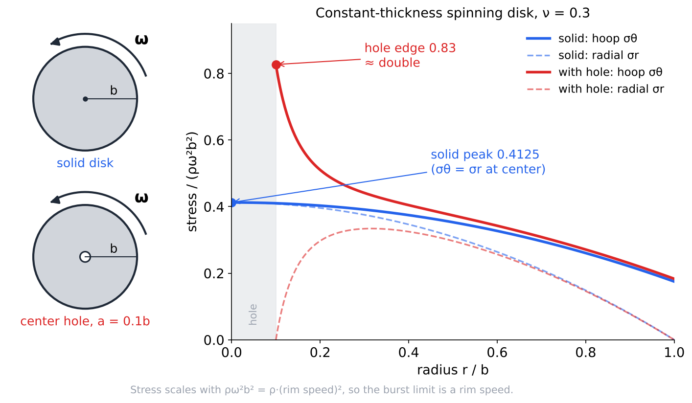
Deeper dive
Where it comes from: add centrifugal body force \(\rho\omega^2 r\) to the ring-element equilibrium, solve with \(\sigma_r(b) = 0\) and finite stress at center. At \(r = 0\): \(\sigma = \frac{3+\nu}{8}\rho\omega^2b^2\) (0.4125 for \(\nu\) = 0.3).
Scaling: \(\rho\omega^2b^2 = \rho v_{rim}^2\), so the burst limit is a rim speed, independent of disk size. Double rpm gives 4x stress. A center hole (bore) gives hoop ≈ \(\frac{3+\nu}{4}\rho\omega^2b^2\) at the hole edge, about 2x.
Example: steel disk (7850 kg/m³), 200 mm diameter, 10,000 rpm: \(\omega\) = 1047 rad/s, rim speed 105 m/s, \(\sigma_{center}\) ≈ 35.5 MPa.
Assumptions: thin, flat, constant thickness, elastic, no blade/rim mass. Turbine disks are tapered toward the rim to even out stress.
In the interview
Ties to combat robot spinner weapons: stress from spin is usually small next to impact loads, but the mounting bore doubles it. Interview trap: forgetting to convert rpm to rad/s.
Clamped plate\(\delta = \dfrac{3}{16}\dfrac{pR^4(1-\nu^2)}{Et^3} \qquad \sigma_{edge} = \dfrac34 p\left(\dfrac{R}{t}\right)^2\)
A circular plate clamped at its edge under uniform pressure: deflection goes as radius to the fourth over thickness cubed, and the peak bending stress is at the clamped edge.
- \(\delta\): center deflection (m, in)
- \(p\): uniform pressure (Pa, psi)
- \(R\): plate radius (m, in)
- \(t\): plate thickness (m, in)
- \(E\): Young's modulus (Pa, psi)
- \(\nu\): Poisson's ratio
- \(\sigma_{edge}\): radial bending stress at edge surface (Pa, psi)
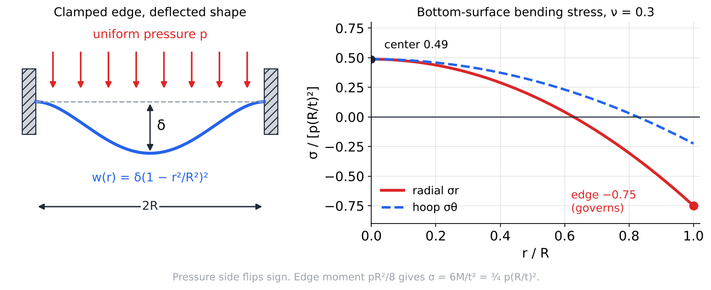
Deeper dive
Derivation: plate bending with stiffness \(D = Et^3/[12(1-\nu^2)]\); the clamped solution is \(w = \frac{p}{64D}(R^2 - r^2)^2\). At center \(\delta = pR^4/(64D)\), which gives the 3/16 form. Edge moment \(M = pR^2/8\) per unit length, \(\sigma = 6M/t^2 = \frac{3}{4}p(R/t)^2\).
Scaling: \(\delta \propto R^4/t^3\), \(\sigma \propto (R/t)^2\). Doubling thickness cuts deflection 8x and stress 4x; doubling radius gives 16x deflection.
Example: aluminum lid, \(R\) = 50 mm, \(t\) = 3 mm, \(p\) = 100 kPa (1 bar), \(E\) = 69 GPa, \(\nu\) = 0.33: \(\delta\) = 0.056 mm, \(\sigma_{edge}\) = 20.8 MPa.
When it breaks: small deflection only (\(\delta \lesssim t/2\)); beyond that membrane stretching stiffens it. Real bolted edges are between clamped and simply supported (simply supported center deflection is about 4x larger).
In the interview
Shows up for sensor windows, end caps and housing lids, like the FLOAT O-ring housing endcap under depth pressure. Lead with the \(t^3\) scaling and say the edge governs stress.
Hoop = 2× axial → cracks run lengthwise. Thin wall if t < r/10. Tiny hole doubles disk stress; burst limit is a rim speed. 1 atm ≈ 14.7 psi ≈ 0.101 MPa ≈ 10 m of water.
Bolts, pins, lugs, welds
Preload\(T = K D P \quad K \approx 0.2 \text{ dry},\ 0.15 \text{ lubed}\)
Short-form torque-tension relation: the wrench torque \(T\) needed to stretch a bolt to preload \(P\). \(K\) lumps all the friction into one number.
- \(T\): tightening torque (lb-in, N·m)
- \(K\): nut factor, dimensionless (~0.2 dry steel, ~0.15 lubed)
- \(D\): nominal bolt diameter (in, m)
- \(P\): preload, the clamp force (lb, N)
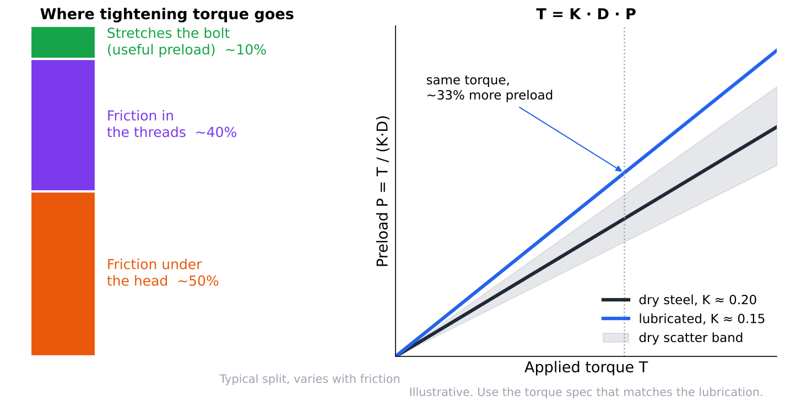
Deeper dive
It comes from the full torque equation: thread friction + head/nut friction + the lead-angle term, each proportional to \(P\). Divide the sum by \(DP\) and you get one lumped coefficient, \(K\). It is measured, not derived.
Because friction dominates, torque control gives roughly ±25% preload scatter. Turn-of-nut, direct tension indicators or measuring bolt stretch do better. Target is usually 75% of proof load for reusable joints.
Worked example: 1/4-20 Grade 8, proof 120 ksi, \(A_t\) = 0.0318 in². 75% proof gives \(P\) = 2,860 lb. Dry: \(T\) = 0.2 × 0.25 × 2,860 ≈ 143 lb-in (12 lb-ft). Put that same torque on an oiled bolt (\(K\) = 0.15) and \(P\) = 3,820 lb, which is 100% of proof.
In the interview
Classic trap: using a dry torque spec on a lubed or Loctited bolt overloads it, as in the example. Applies directly to suspension and steering hardware on the Baja car: say where the torque spec came from and what the threads looked like.
Stress area (inch)\(A_t = 0.7854\left(D - \dfrac{0.9743}{n}\right)^2\)
The effective tensile area of a threaded rod. Divide axial load by \(A_t\), not by \(\pi D^2/4\), to get the stress in the threads.
- \(A_t\): tensile stress area (in²)
- \(D\): nominal (major) diameter (in)
- \(n\): threads per inch (1/in), so pitch \(p = 1/n\)
- \(0.7854\): \(\pi/4\)
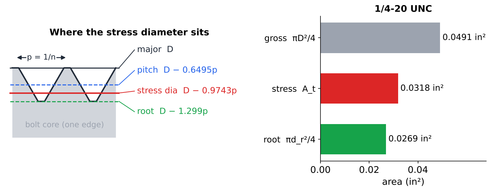
Deeper dive
Tests on threaded rods showed they break at a load matching a plain bar whose diameter is the average of the pitch diameter (\(D - 0.6495p\)) and the root diameter (\(D - 1.299p\)). That average is \(D - 0.9743p\), and \(\pi/4\) times its square gives \(A_t\).
This is the UTS (inch) form. Metric (ISO) threads use \(A_t = \tfrac{\pi}{4}(d - 0.9382P)^2\) with \(P\) the pitch in mm. An M10×1.5 gives 58.0 mm².
Examples: 1/4-20 → \(0.7854(0.25 - 0.0487)^2\) = 0.0318 in². 3/8-24 → 0.0878 in². At the same nominal size, a fine thread has a slightly larger \(A_t\) because its threads are shallower.
Use \(A_t\) for tension and proof load. For shear, use the shank area if the shank crosses the shear plane and the minor area if the threads do.
In the interview
Asking for the 'area of a 1/4 inch bolt' is a test of whether you know that threads reduce the area by about 35%. Any bolt-sizing hand calc (e.g., a lug or wheel-hub calculator) should use \(A_t\).
Pin shear\(\tau = \dfrac{V}{A} \;\;(\text{double: } \tfrac{V}{2A}) \quad \tau_{peak} = \tfrac43\dfrac{V}{A}\)
Average shear stress in a pin or bolt cut by shear planes. With two shear planes (clevis), each carries half the load.
- \(\tau\): shear stress (psi, MPa)
- \(V\): transverse load through the joint (lb, N)
- \(A\): pin cross-section, \(\pi d^2/4\) (in², mm²)
- \(\tau_{peak}\): max beam-theory shear at the neutral axis
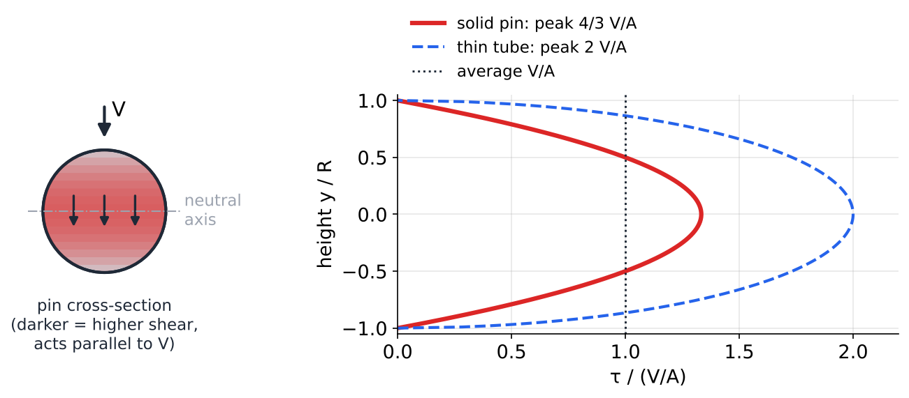
Deeper dive
\(V/A\) assumes shear is uniform across the section. Beam theory (\(\tau = VQ/Ib\)) applied to a solid circle gives \(\tau(y) = \tfrac43 \tfrac{V}{A}(1 - y^2/R^2)\), so the peak is 4/3 of the average. For a thin-walled tube it is 2.
Pin and bolt shear allowables are usually set against the average stress. Use the peak when the pin works as a beam (gaps in a clevis, long pins). In that case bending stress usually governs before shear does.
Example: 1/4 in pin, \(A\) = 0.0491 in², 1,000 lb in double shear → \(\tau\) = 1000/(2 × 0.0491) ≈ 10.2 ksi. Single shear doubles that to 20.4 ksi.
Scaling: \(\tau \propto V/d^2\), so a 1.4× larger diameter halves the stress.
In the interview
Good follow-ups: is the pin in single or double shear, and are threads in the shear plane? Suspension rod-end and clevis mounts on the Baja car are double-shear joints; say that the double-shear setup halves the shear and also stops the bolt from bending.
Bearing\(\sigma_{br} = \dfrac{F}{Dt}\)
Bearing (crushing) stress where a pin or bolt pushes on the side of its hole. The contact pressure is spread over the projected area, diameter times thickness.
- \(\sigma_{br}\): bearing stress (psi, MPa)
- \(F\): load transferred through the pin (lb, N)
- \(D\): pin or hole diameter (in, mm)
- \(t\): plate or lug thickness (in, mm)
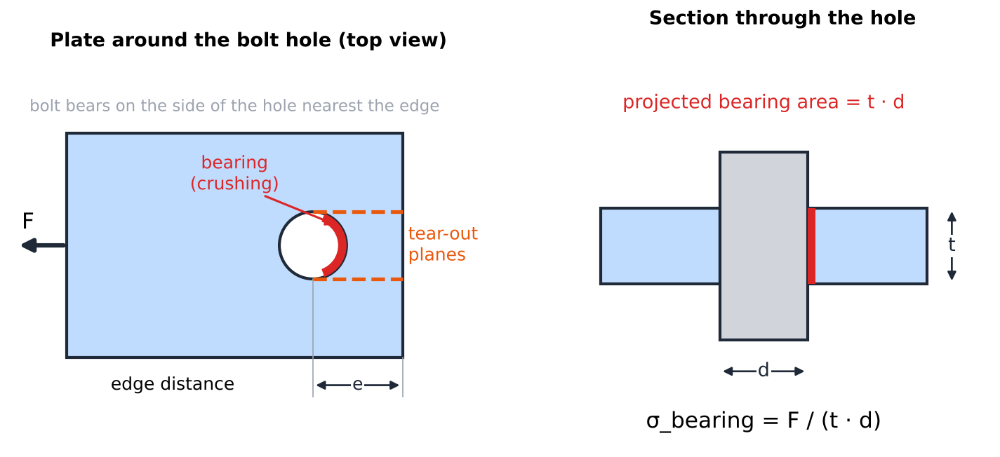
Deeper dive
The real contact pressure is roughly cosine-shaped around half the hole. Dividing by the projected area \(Dt\) gives a convenient average, which is what bearing allowables are tested against.
Bearing allowables are higher than tensile yield because the material is confined (about 1.5× \(F_{ty}\) at \(e/D = 2\) for aluminum). They drop if the edge distance is small. Failure looks like hole elongation, which adds slop rather than causing a sudden fracture.
Example: 1/4 in bolt in a 0.125 in aluminum tab carrying 1,000 lb → \(\sigma_{br}\) = 1000/(0.25 × 0.125) = 32 ksi.
Scaling: thin sheet is the usual problem. Doubling \(t\) or adding a bushing or shoulder bolt with a larger \(D\) cuts the stress proportionally.
In the interview
Thin aluminum tabs with small bolts are where bearing governs. Mention bushings, doublers or a larger shoulder diameter as the fix. Ovalized holes in suspension tabs cause slop and alignment drift.
Tear-out\(\tau = \dfrac{F}{2et}\)
Shear tear-out: the pin pushes a plug of material out through the edge of the plate along two shear planes. Edge distance \(e\) sets the length of each plane.
- \(\tau\): average shear stress on the tear-out planes (psi, MPa)
- \(F\): pin load toward the edge (lb, N)
- \(e\): edge distance, hole center to free edge (in, mm)
- \(t\): plate thickness (in, mm)
- \(2\): two shear planes, one on each side of the hole
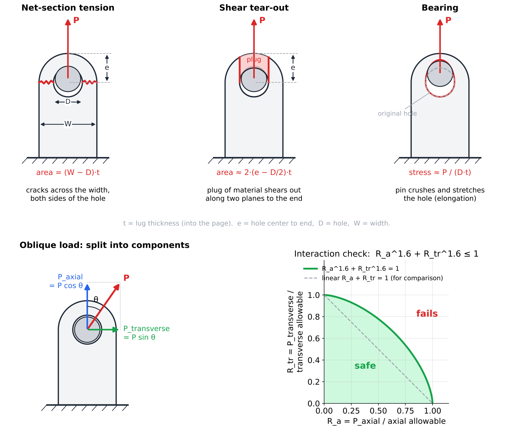
Deeper dive
Shear area = 2 planes × length × thickness. Using \(e\) (center to edge) is the simple form. The more conservative form uses \(e - D/2\), the material actually ahead of the hole. Check which one your allowable was derived with.
It is a design-rule failure mode: keep \(e/D \ge 1.5\) (2 is common) and tear-out rarely governs. Below that, tear-out and bearing allowables both drop sharply.
Example: \(e\) = 0.5 in, \(t\) = 0.125 in, \(F\) = 1,000 lb → \(\tau\) = 1000/(2 × 0.5 × 0.125) = 8.0 ksi. Compare to shear ultimate (~0.6 \(S_u\)).
Scaling: linear in \(e\) and \(t\), so moving the hole in from the edge is cheaper than thickening the whole part.
In the interview
When asked for 'all the ways a lug fails', list net-section tension, tear-out, bearing, pin shear and pin bending. Tear-out is the one people forget. It ties into lug sizing for Baja suspension mounts.
Lug oblique\(R_a^{1.6} + R_{tr}^{1.6} \le 1\)
Interaction check for a lug loaded at an angle: split the load into axial and transverse parts, take each as a ratio of its own allowable, and combine with exponent 1.6.
- \(R_a\): axial load / axial allowable (dimensionless)
- \(R_{tr}\): transverse load / transverse allowable (dimensionless)
- \(1.6\): empirical exponent from lug test data
Deeper dive
Axial (along the lug) and transverse lug capacities come from separate charts (Melcher/Bruhn method). Under oblique load the two modes interact. Test data fits \(R_a^{1.6} + R_{tr}^{1.6} = 1\), which lies between linear (conservative) and circular.
Margin: find the load factor \(s\) that brings the sum to 1, so \(s = (\text{sum})^{-1/1.6}\) and \(MS = s - 1\).
Example: \(P\) = 1,000 lb at 30° from the lug axis, axial allowable 3,000 lb, transverse allowable 2,000 lb. \(R_a\) = 866/3000 = 0.289, \(R_{tr}\) = 500/2000 = 0.250. Sum of 1.6 powers = 0.246 → \(s\) = 2.40 → MS = +1.40. A linear sum (0.539) would give MS = +0.86.
It only covers ultimate lug strength. Check pin bending and bearing yield separately.
In the interview
Tells an aerospace interviewer you know lug analysis goes past \(F/A\). Suspension tabs on a Baja car see oblique loads at nearly every wheel position, which is exactly where this check applies.
Thread pull-out\(F \approx 0.4\,\pi D L_e\, \tau_u\)
Load needed to strip internal threads: the shear strength of the material times the cylindrical area at the thread diameter across the engaged length, with a knockdown factor.
- \(F\): pull-out (stripping) load (lb, N)
- \(D\): nominal thread diameter (in, mm)
- \(L_e\): length of thread engagement (in, mm)
- \(\tau_u\): ultimate shear strength of the weaker (usually tapped) material (psi, MPa)
- \(0.4\): fraction of \(\pi D L_e\) that effectively shears (thread geometry and uneven load sharing)
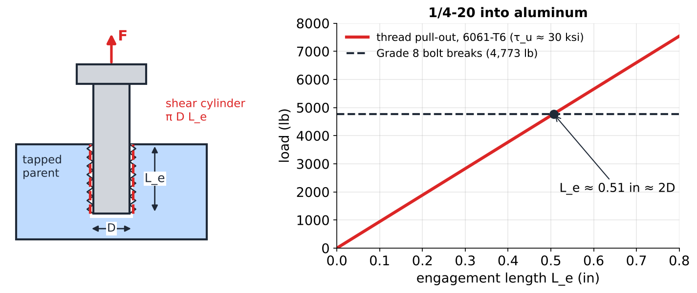
Deeper dive
The ideal shear area of one thread form is about half of \(\pi D L_e\). The first few threads carry most of the load and the tap is not perfect, so a knockdown to ~0.4 is common for quick checks. The detailed method uses the FED-STD-H28 shear-area formula.
The design goal is for the bolt to break before the threads strip, so a failure is visible and the part can be replaced. Rules of thumb: 1D engagement in steel, 1.5–2D in aluminum, 2D+ in plastic. Use helicoils in soft material.
Example: 1/4-20 into 6061-T6 (\(\tau_u\) ≈ 30 ksi), \(L_e\) = 0.375 in: \(F\) = 0.4π(0.25)(0.375)(30,000) ≈ 3,530 lb. A Grade 8 bolt breaks at 150 ksi × 0.0318 = 4,770 lb, so the threads strip first. Matching them needs \(L_e\) ≈ 0.51 in ≈ 2D.
In the interview
Common question: 'How deep should a tapped hole in aluminum be?' Answer 'about 2D, here's why' and show this calculation. Beyond ~2–3D, extra length adds little because the first threads carry most of the load.
Fillet weld\(\tau = \dfrac{V}{0.707\,h L}\)
Shear stress in a fillet weld, calculated on the throat, the smallest section through the weld. The throat of an equal-leg 45° fillet is 0.707 times the leg size.
- \(\tau\): throat shear stress (psi, MPa)
- \(V\): load carried by the weld (lb, N)
- \(h\): leg size of the fillet (in, mm)
- \(L\): total effective weld length (in, mm)
- \(0.707\,h\): throat \(= h\cos 45°\)
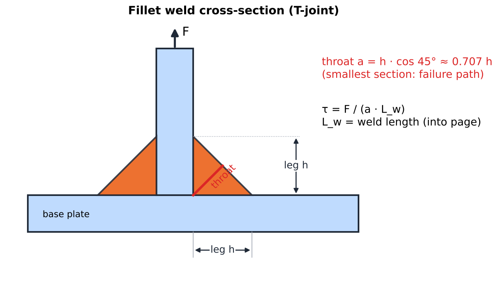
Deeper dive
Whatever the load direction, the standard method treats all stress on the throat as shear. That is conservative for transverse loads (actual strength is about 1.5× higher) and accurate for longitudinal loads.
Assumes full fusion and an equal-leg fillet. It does not cover root gaps, undercut, or the heat-affected zone, which is often the weak spot in aluminum and heat-treated 4130.
Example: 1/4 in fillet, 4 in total length, 10,000 lb → throat area 0.707 × 0.25 × 4 = 0.707 in² → \(\tau\) ≈ 14.1 ksi. AISC ASD allowable for E70 filler is 0.3 × 70 = 21 ksi, so it passes.
Scaling: linear in \(h\) and \(L\). Adding length usually costs less than a bigger leg, since weld volume grows with \(h^2\).
In the interview
The trap is using leg size instead of throat, which overstates capacity by about 41%. For a welded chromoly frame, mention that the HAZ, not the throat, often governs.
Slip-critical\(\mu P n_{\text{faces}} \ge F\)
A bolted joint stays slip-critical (friction carries the shear) as long as the clamp friction exceeds the applied shear load. If it does, the bolt sees only tension.
- \(\mu\): friction coefficient at the faying surfaces (~0.2–0.5)
- \(P\): bolt preload, clamp force per bolt (lb, N)
- \(n_{\text{faces}}\): number of slip interfaces (1 single shear, 2 double shear)
- \(F\): shear load the joint must carry (lb, N)
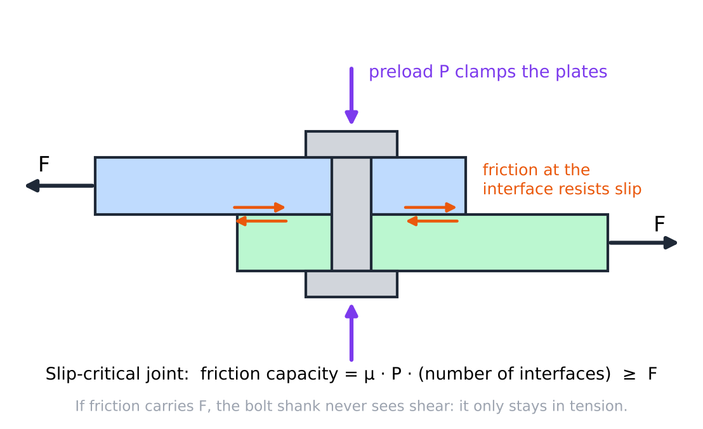
Deeper dive
Coulomb friction: each clamped interface can resist \(\mu P\) before sliding. Multiply by bolts and interfaces. Once the joint slips, load moves into bearing on the bolt and hole, and repeated slip leads to fretting, loosening and fatigue.
Preload is the uncertain term. Torque control gives about ±25%, and preload relaxes (embedment, gaskets, paint). Use the low end of preload and a conservative \(\mu\) (clean mill scale ~0.3, painted or oily ~0.1–0.2).
Example: 1/4-20 Grade 8 at 2,860 lb preload, \(\mu\) = 0.2, single interface → 0.2 × 2,860 ≈ 570 lb per bolt. Two bolts in double shear → ~2,290 lb.
Scaling: linear in \(P\), \(\mu\) and interfaces. A bigger bolt or a second shear plane is the usual fix.
In the interview
Vibration and reversing loads (suspension, combat robot weapon hubs) call for friction-grip joints or dowels. Bolts working in bearing will walk loose. Mention dowels for location and bolts for clamp.
~90% of torque is friction; preload ≈ 75% of proof. ¼-20: A_t = 0.0318 in².
Fatigue, fracture, margins
Mean / alt.\(\sigma_m = \dfrac{\sigma_{max}+\sigma_{min}}{2} \qquad \sigma_a = \dfrac{\sigma_{max}-\sigma_{min}}{2}\)
Splits any cyclic stress history into a steady part (mean) and a fluctuating part (alternating amplitude). Fatigue criteria use these two numbers.
- \(\sigma_m\): mean stress (psi, MPa)
- \(\sigma_a\): alternating stress amplitude, half the range (psi, MPa)
- \(\sigma_{max},\ \sigma_{min}\): peak and valley of the cycle (psi, MPa)
- \(R = \sigma_{min}/\sigma_{max}\): stress ratio, often quoted with them
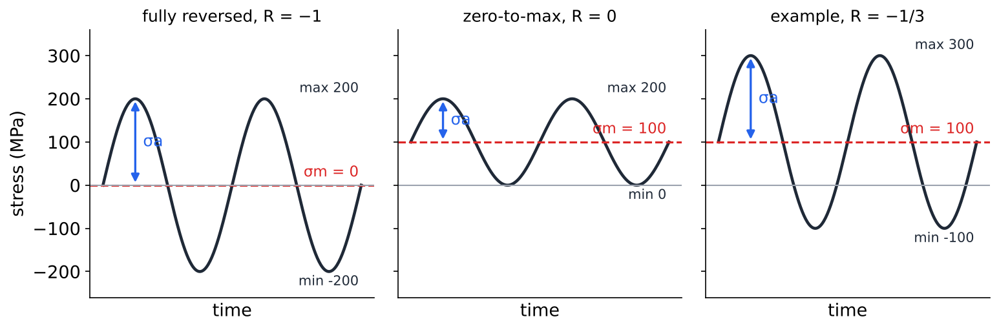
Deeper dive
It is just the midpoint and half-range of the cycle. The range is \(\Delta\sigma = 2\sigma_a\), and crack-growth laws use the range.
Key cases: fully reversed (rotating shaft) \(R = -1\), \(\sigma_m = 0\). Zero-to-max (bolt load on/off) \(R = 0\), \(\sigma_m = \sigma_a\). Variable-amplitude histories (suspension over rough ground) need rainflow counting to pull out individual cycles first.
Example: \(\sigma_{max}\) = 300 MPa, \(\sigma_{min}\) = −100 MPa → \(\sigma_m\) = 100 MPa, \(\sigma_a\) = 200 MPa, \(R\) = −1/3.
Apply \(K_f\) to both for ductile parts in high-cycle fatigue. A compressive mean helps, which is why shot peening and preloaded bolts work.
In the interview
Expect 'why does a preloaded bolt survive fatigue better?' Preload raises the mean, but the stiff clamped joint takes most of the external load, so the bolt's alternating stress drops a lot.
Goodman\(\dfrac{\sigma_a}{S_e} + \dfrac{\sigma_m}{S_u} = \dfrac{1}{n}\)
Modified Goodman line: a straight-line fatigue criterion that combines alternating and mean stress into one safety factor \(n\) against infinite-life fatigue.
- \(\sigma_a\): alternating stress (psi, MPa)
- \(\sigma_m\): mean stress (psi, MPa)
- \(S_e\): corrected endurance limit (psi, MPa)
- \(S_u\): ultimate tensile strength (psi, MPa)
- \(n\): fatigue safety factor
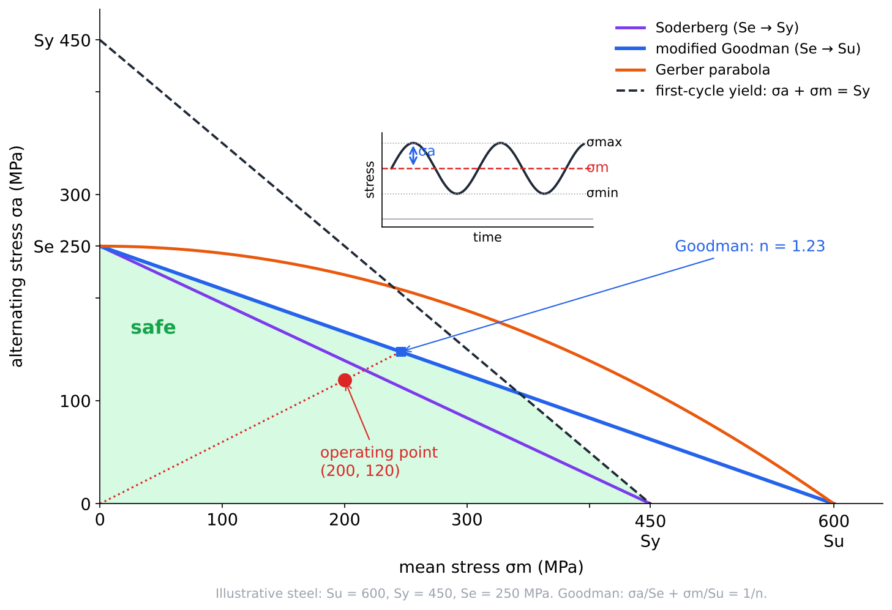
Deeper dive
Empirical fit: join \(S_e\) (pure alternating) to \(S_u\) (pure static) with a straight line. Test data falls between Goodman and Gerber, so Goodman is slightly conservative. Soderberg uses \(S_y\) and is more conservative still.
\(S_e\) must be corrected: \(S_e' \approx 0.5 S_u\) for steel (up to about 1,400 MPa \(S_u\)), times Marin factors for surface, size, load type, temperature and reliability. Aluminum has no true endurance limit, so use the strength at a set number of cycles (e.g. \(5\times10^8\)).
Example (matches plot): \(S_u\) = 600, \(S_e\) = 250 MPa, \(\sigma_a\) = 120, \(\sigma_m\) = 200 → 0.48 + 0.333 = 0.813 → \(n\) = 1.23. Also check first-cycle yield: \(S_y/(\sigma_a+\sigma_m)\) = 450/320 = 1.41.
In the interview
Interviewers check whether you correct \(S_e\) and whether you also check yield. Suspension members cycle about a static ride-height mean, so this is the right check for Baja control arms and tie rods.
Stress conc.\(K_t = 1 + \dfrac{2a}{b} \;\;(\text{hole} = 3)\)
Peak stress at the tip of an elliptical hole in a wide plate under tension, as a multiple of the far-field stress. A circular hole gives exactly 3.
- \(K_t\): elastic stress concentration factor, \(\sigma_{max}/\sigma_{nom}\)
- \(a\): semi-axis perpendicular to the load (in, mm)
- \(b\): semi-axis parallel to the load (in, mm)
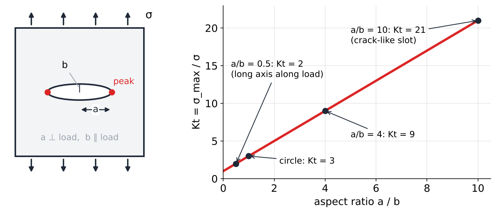
Deeper dive
From Inglis' elasticity solution (1913). Equivalent form: \(K_t = 1 + 2\sqrt{a/\rho}\), where \(\rho = b^2/a\) is the tip radius. As \(\rho \to 0\), \(K_t \to \infty\), which is why sharp cracks need fracture mechanics instead.
Assumes an infinite linear-elastic plate. Finite width, nearby holes and fillets change it, so use Peterson's charts in practice. The peak falls off quickly: at one radius away from a round hole it is only 1.22σ.
Ductile static loading: local yielding redistributes stress, so \(K_t\) is usually ignored. Fatigue and brittle materials: use it, softened by notch sensitivity, \(K_f = 1 + q(K_t - 1)\).
Examples: \(a/b\) = 1 → 3; \(a/b\) = 4 → 9; \(a/b\) = 10 → 21. Turning the same slot to run along the load (\(a/b\) = 0.5) → 2.
In the interview
'Why are aircraft windows round?' and 'how do you stop a crack?' (drill a stop hole to blunt the tip) both use this equation. Also: \(K_t\) does not depend on material or load magnitude, only geometry.
Stress intensity\(K = \lambda\sigma\sqrt{\pi a} \quad (\text{edge } \lambda \approx 1.12)\)
Stress intensity factor: a single number for how severe the stress field is at a crack tip. Fracture happens when \(K\) reaches the material's toughness \(K_{IC}\).
- \(K\): mode I stress intensity factor (MPa√m, ksi√in)
- \(\sigma\): far-field nominal stress (MPa, ksi)
- \(a\): crack length; half-length for a center crack, full depth for an edge crack (m, in)
- \(\lambda\): geometry factor (also written \(Y\) or \(\beta\)); 1 for a center crack, ≈1.12 for an edge crack
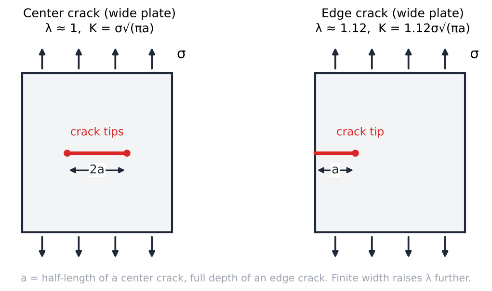
Deeper dive
Linear-elastic analysis gives crack-tip stresses \(\sigma_{ij} = K/\sqrt{2\pi r}\cdot f(\theta)\). The singularity has the same shape for every crack, so \(K\) alone sets its strength. \(\sqrt{\pi a}\) comes from Griffith's energy balance.
\(\lambda\) accounts for free surfaces and finite width. The 1.12 for an edge crack comes from the free edge. Finite plates, surface cracks and holes have handbook values (Tada, Murakami).
Valid for LEFM: the plastic zone must be small compared with the crack and the part thickness. Tough, thin parts need J-integral or R-curve methods.
Example: edge crack \(a\) = 2 mm, \(\sigma\) = 200 MPa → \(K\) = 1.12 × 200 × √(π × 0.002) ≈ 17.8 MPa√m, well below 7075-T7351's ~31.
In the interview
Scaling question: \(K \propto \sqrt{a}\), so quadrupling the crack only doubles \(K\). Also know mode I (opening) vs II and III, and that \(K_{IC}\) is a plane-strain, thick-section value.
Critical crack\(a_c = \dfrac{1}{\pi}\left(\dfrac{K_{IC}}{\lambda\sigma}\right)^2\)
Set \(K = K_{IC}\) and solve for \(a\): the crack size at which the part fractures suddenly at a given stress. Used to set inspection limits.
- \(a_c\): critical crack size (m, in)
- \(K_{IC}\): plane-strain fracture toughness (MPa√m, ksi√in)
- \(\lambda\): geometry factor (1 center, ≈1.12 edge)
- \(\sigma\): applied stress (MPa, ksi)
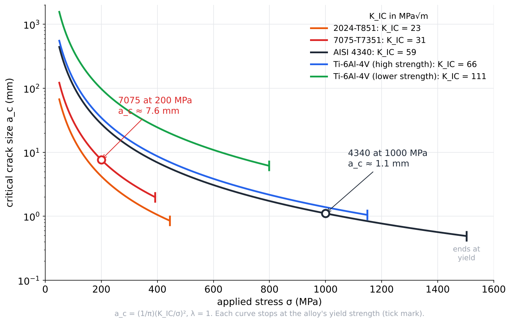
Deeper dive
Straight rearrangement of \(K_{IC} = \lambda\sigma\sqrt{\pi a_c}\). Strong dependence on stress: \(a_c \propto 1/\sigma^2\), so doubling the stress cuts the critical crack by 4×.
Examples: 7075-T7351 (\(K_{IC}\) ≈ 31 MPa√m) at 200 MPa, \(\lambda\) = 1 → \(a_c\) = (1/π)(31/200)² = 7.6 mm. As an edge crack (\(\lambda\) = 1.12) → 6.1 mm. 4340 (\(K_{IC}\) ≈ 59) at 1,000 MPa → 1.1 mm, close to the limit of reliable NDI.
Damage tolerance means the smallest crack inspection can reliably find must grow to \(a_c\) slowly enough to be caught at the next inspection. Leak-before-break for pressure vessels requires \(a_c\) larger than the wall thickness.
In the interview
Good answer to 'why not use the strongest steel?' Toughness usually drops as strength rises, so \(a_c\) can fall below what inspection can find. That trade-off matters for pressure vessels and launch vehicle structures.
Paris law\(\dfrac{da}{dN} = C\,\Delta K^m\)
Paris law: in the steady middle region, crack growth per cycle is a power law of the stress-intensity range. Integrating it gives the number of cycles to grow a crack from detectable size to critical.
- \(da/dN\): crack growth per cycle (m/cycle)
- \(\Delta K\): stress-intensity range, \(\lambda\Delta\sigma\sqrt{\pi a}\) (MPa√m)
- \(C\): material constant (units depend on \(m\))
- \(m\): Paris exponent, ~3 for steels, 3–4 for aluminum
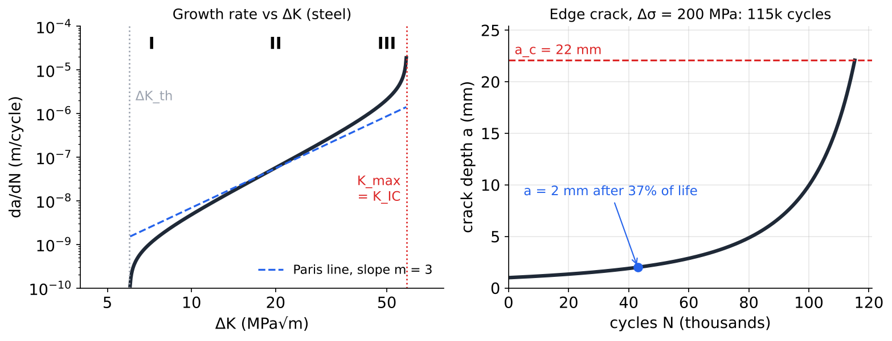
Deeper dive
Empirical fit to region II. Region I has a threshold \(\Delta K_{th}\) below which cracks do not grow. In region III, growth runs away as \(K_{max}\) approaches \(K_{IC}\). Mean stress (\(R\)) shifts the curve, which the basic law ignores (Walker and NASGRO add it).
Integrate with \(\Delta K = \lambda\Delta\sigma\sqrt{\pi a}\): \(N = \dfrac{a_i^{1-m/2} - a_c^{1-m/2}}{C(\lambda\Delta\sigma\sqrt\pi)^m (m/2 - 1)}\).
Example: steel, \(C\) = 6.9×10⁻¹², \(m\) = 3, edge crack, \(\Delta\sigma\) = 200 MPa (\(R\) = 0), \(a_i\) = 1 mm, \(a_c\) = 22 mm (\(K_{IC}\) = 59) → \(N\) ≈ 115,000 cycles. Starting from 0.5 mm gives ≈ 176,000 cycles.
Scaling: \(N \propto \Delta\sigma^{-m}\), so 2× stress range → 8× fewer cycles (\(m\) = 3). Life depends heavily on the initial flaw, so inspection capability sets life.
In the interview
Shows up in damage-tolerance questions at aerospace companies. Make the point that halving the initial flaw size adds more life than doubling \(a_c\), because \(a_i\) dominates the integral.
Margin\(MS = \dfrac{\text{Allowable}}{\text{Applied}\times FS} - 1\)
Margin of safety: how much load capacity remains after the required factor of safety is applied. \(MS \ge 0\) passes and \(MS < 0\) fails.
- \(MS\): margin of safety (dimensionless, often given as %)
- Allowable: material or component capacity (yield, ultimate, buckling, etc.)
- Applied: limit load or stress, the maximum expected in service
- \(FS\): required factor of safety for that failure mode
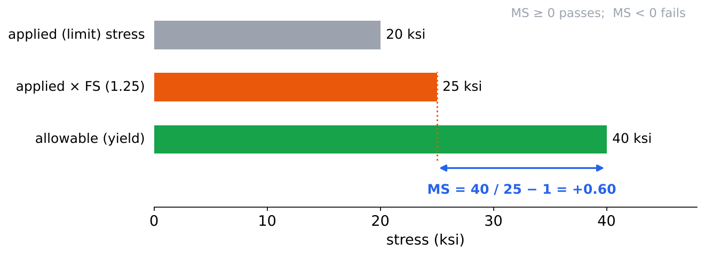
Deeper dive
FS is a requirement set by the customer or standard. MS is the result. The applied load is multiplied by FS to give the design load, and MS is how much bigger the allowable is than that design load.
Typical aerospace practice uses separate yield and ultimate checks (e.g. ~1.1–1.25 on yield, 1.4 on ultimate), and the lowest margin across all modes governs. Report every mode: yield, ultimate, buckling, joints, fatigue.
Example: allowable 40 ksi, applied 20 ksi, FS = 1.25 → MS = 40/25 − 1 = +0.60. A part at MS = +2.0 is likely overweight.
Only linear for linear problems. For buckling or contact, scale the load by FS and re-solve instead of scaling the stress.
In the interview
Common slip: confusing MS with FS, or applying FS twice (in both allowable and load). For a structures role, give MS by mode, e.g. 'MS +0.15 yield, +0.32 ultimate, +0.8 buckling'.
Bearing life (ball)\(L_{10} = \left(\dfrac{C}{P}\right)^{3} \times 10^6 \text{ rev}\)
Rated life of a rolling bearing: the number of revolutions that 90% of a population of identical bearings will survive at equivalent load \(P\). The exponent is 3 for ball bearings.
- \(L_{10}\): rated life at 90% reliability (revolutions)
- \(C\): basic dynamic load rating from the catalog, the load for 10⁶ rev life (N, lbf)
- \(P\): equivalent dynamic load, \(XF_r + YF_a\) (N, lbf)
- \(3\): life exponent for ball bearings (10/3 for rollers)
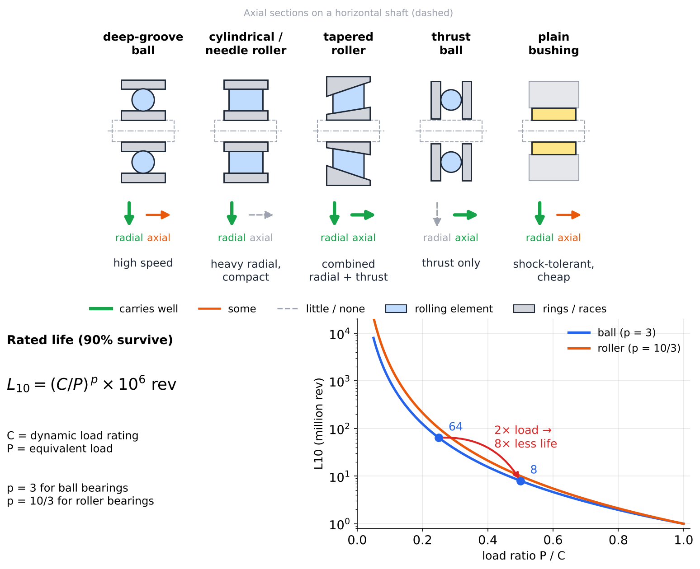
Deeper dive
Lundberg-Palmgren fit to rolling-contact fatigue test data (subsurface spalling). \(C\) is defined as the load giving \(10^6\) rev, which is why \(C/P = 1\) gives 1 million revolutions. Point contact (ball) gives \(p\) = 3. Line contact (roller) gives 10/3.
Convert to hours: \(L_{10h} = L_{10}/(60 \cdot \text{rpm})\). Modern catalogs add factors for reliability, lubrication and contamination (\(a_1 a_{ISO}\)), which can move life several-fold either way.
Example: \(C\) = 13.5 kN, \(P\) = 1.5 kN → \((9)^3\) = 729 × 10⁶ rev. At 1,800 rpm, 729×10⁶/(1,800 × 60) ≈ 6,750 h.
Does not cover static overload (use \(C_0\)), shock, misalignment or poor sealing, which are the usual real causes of failure in dirty, high-impact use.
In the interview
A simple scaling question: '20% more load, how much life?' 1/1.2³ = 0.58. For the Baja car and combat robot weapons, contamination and shock (\(C_0\)) usually kill bearings before \(L_{10}\) is reached.
Soderberg uses S_y. Also check σ_a + σ_m < S_y. Steel S_e ≈ ½ UTS; aluminum has no endurance limit. Hole K_t: biaxial 2, pure shear 4. Roller bearings: exponent 10/3.
Dynamics and vibration
Natural freq.\(\omega_n = \sqrt{\dfrac{k}{m}} \qquad f = \dfrac{\omega_n}{2\pi}\)
A mass on a spring, nudged and released, oscillates at one preferred rate set only by stiffness and mass. \(\omega_n\) is that rate in rad/s; \(f\) is the same thing in Hz.
- \(\omega_n\): undamped natural frequency (rad/s)
- \(k\): spring stiffness (N/m, lb/in)
- \(m\): moving mass (kg; in US units use slugs or lb/386 for lb/in)
- \(f\): natural frequency (Hz, cycles/s)
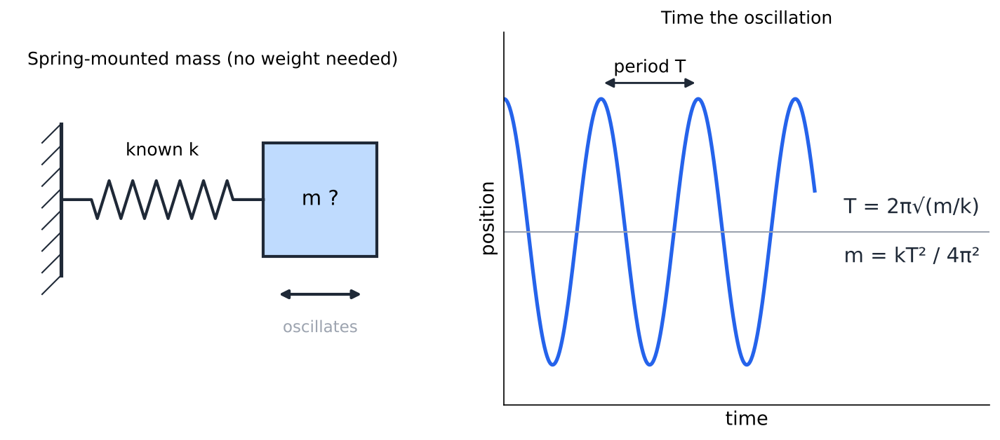
Deeper dive
Derivation: Newton on the mass gives \(m\ddot{x} + kx = 0\). Try \(x = A\sin\omega t\): \(-m\omega^2 + k = 0\), so \(\omega_n = \sqrt{k/m}\). Period \(T = 1/f = 2\pi/\omega_n\).
Assumptions: linear spring, lumped mass, small motion, no damping. A real structure has many modes; this is the first one with an effective mass and stiffness. Light damping barely shifts it (see \(\omega_d\)).
Scaling: \(f \propto \sqrt{k/m}\). Double \(k\) → \(f\) up 41%. Need to double \(f\)? You need 4× stiffness or ¼ the mass. Handy shortcut: \(f \approx 15.76/\sqrt{\delta_{st}\,[\text{mm}]}\) Hz, since \(k/m = g/\delta_{st}\).
Example: quarter car, \(m\) = 100 kg, wheel rate \(k\) = 10,000 N/m → \(\omega_n\) = 10 rad/s, \(f\) = 1.59 Hz, in the typical 1-3 Hz ride band.
In the interview
Classic trap: mixing rad/s and Hz (a factor of 6.28), or using lb instead of lb-mass in US units. For Baja, use wheel rate (not spring rate) and sprung corner mass to get ride frequency.
Damping\(\zeta = \dfrac{c}{2\sqrt{km}} \qquad \omega_d = \omega_n\sqrt{1-\zeta^2}\)
\(\zeta\) measures how much damping you have compared to the amount that just kills overshoot. \(\omega_d\) is the slightly slower frequency a damped system actually rings at.
- \(\zeta\): damping ratio (dimensionless)
- \(c\): viscous damping coefficient (N·s/m, lb·s/in)
- \(k\): stiffness (N/m)
- \(m\): mass (kg)
- \(\omega_n\): undamped natural frequency (rad/s)
- \(\omega_d\): damped natural frequency (rad/s)
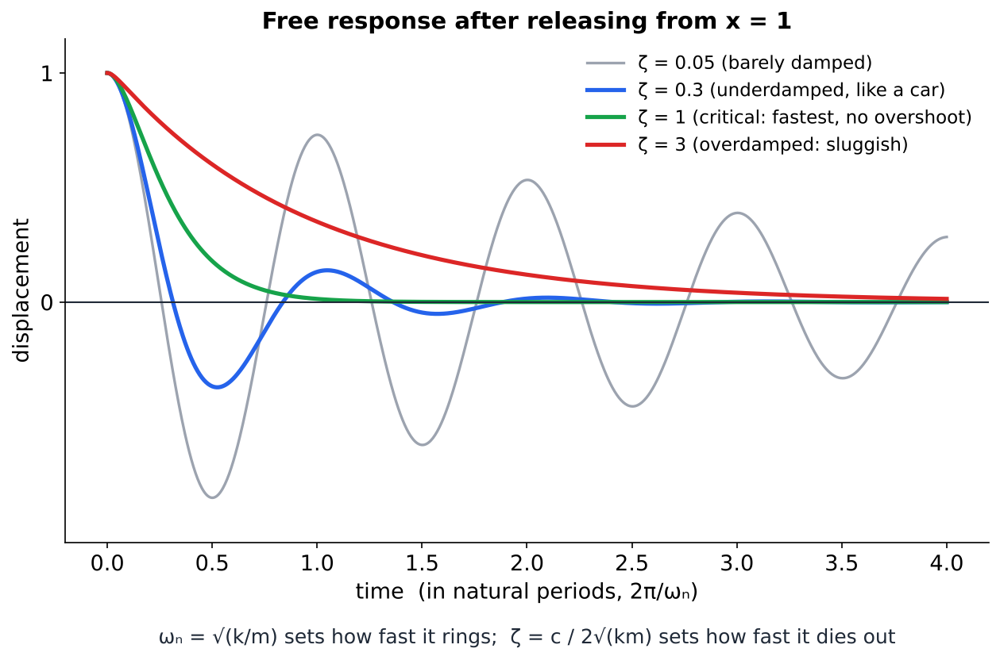
Deeper dive
Derivation: \(m\ddot{x} + c\dot{x} + kx = 0\) has roots \(s = -\zeta\omega_n \pm \omega_n\sqrt{\zeta^2-1}\). Critical damping \(c_c = 2\sqrt{km} = 2m\omega_n\) makes the square root zero; \(\zeta = c/c_c\). For \(\zeta<1\) the root is complex and the motion is \(e^{-\zeta\omega_n t}\sin\omega_d t\).
Regimes: \(\zeta<1\) underdamped (oscillates), \(=1\) critical, \(>1\) overdamped (sluggish). Cars run about 0.2-0.4 in ride. At \(\zeta = 0.3\), \(\omega_d\) is only 4.6% below \(\omega_n\), so the shift rarely matters.
Assumptions: damping force proportional to velocity. Real shocks are nonlinear and digressive, with different bump and rebound valving, so \(\zeta\) is an equivalent value at a chosen shaft speed.
Example: \(m\) = 100 kg, \(k\) = 10,000 N/m → \(c_c\) = 2000 N·s/m. For \(\zeta\) = 0.3, \(c\) = 600 N·s/m and \(\omega_d = 10\sqrt{0.91}\) = 9.54 rad/s.
In the interview
Measure \(\zeta\) from a test: log decrement \(\delta = \ln(x_1/x_2) \approx 2\pi\zeta\). In shock talks with FOX, damping at the wheel scales with \(MR^2\) just like the spring, so shock-shaft \(c\) is not wheel \(c\).
Resonance peak\(Q = \dfrac{1}{2\zeta}\)
Drive a lightly damped system at its natural frequency and its motion grows to about \(Q\) times the static deflection. Less damping, taller and sharper peak.
- \(Q\): quality factor, peak amplification at resonance (dimensionless)
- \(\zeta\): damping ratio (dimensionless)
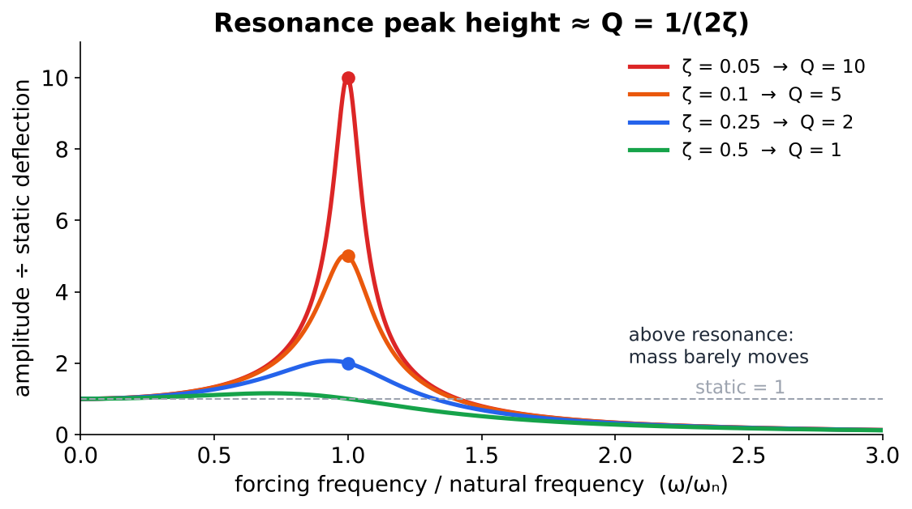
Deeper dive
Derivation: for harmonic force \(F_0\sin\omega t\), steady amplitude is \(X = (F_0/k)\big/\sqrt{(1-r^2)^2 + (2\zeta r)^2}\) with \(r = \omega/\omega_n\). At \(r = 1\) the stiffness and inertia terms cancel and only damping is left: \(X/(F_0/k) = 1/(2\zeta)\).
Accuracy: the true peak is \(1/(2\zeta\sqrt{1-\zeta^2})\) at \(r = \sqrt{1-2\zeta^2}\). For \(\zeta\) = 0.05: 10.01 vs 10. For \(\zeta\) = 0.3: 1.75 vs 1.67. Good below about 0.2. Past \(\zeta = 0.707\) there is no peak.
Scaling: halve the damping → double the peak. Bare welded steel has \(\zeta\) of roughly 0.01-0.02, so \(Q\) of 25-50: a small vibration input at resonance gives a large stress. Above \(r \approx \sqrt2\) amplitude drops below static.
Example: a bracket with 0.1 mm static deflection and \(\zeta\) = 0.02 will move about 2.5 mm if excited at its natural frequency.
In the interview
Common question: why do structures fail in vibration testing at loads far below static strength? Answer: \(Q\) multiplies stress at resonance, and fatigue cycles add up fast. Fix by moving \(f_n\) away from the forcing or adding damping.
Wheel rate\(k_w = k\cdot MR^2\cos^2\theta\)
The spring rate the tire actually feels is the shock spring rate times motion ratio squared, reduced again if the shock is tilted from its travel direction.
- \(k_w\): wheel rate (N/m, lb/in)
- \(k\): spring rate at the shock (N/m, lb/in)
- \(MR\): motion ratio, shock travel ÷ wheel travel (dimensionless)
- \(\theta\): shock angle from the direction it gets pushed (deg)
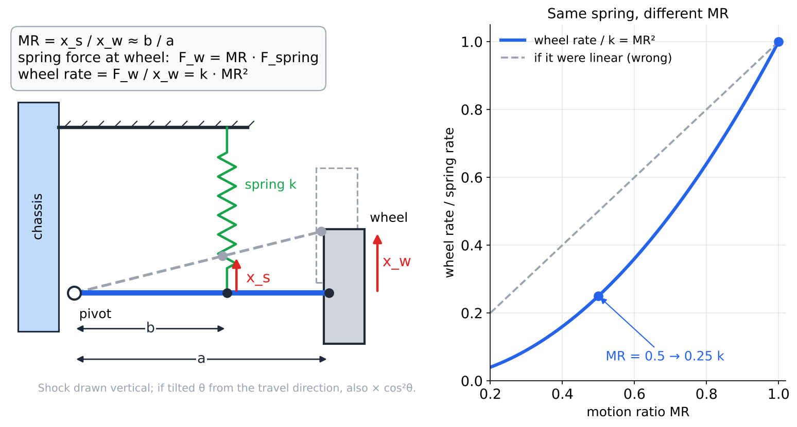
Deeper dive
Derivation: one MR comes from displacement: wheel moves \(x_w\), spring compresses \(MR\,x_w\). The other comes from leverage: spring force \(k\,MR\,x_w\) acts back at the wheel as \(MR\) times smaller. So \(F_w = k\,MR^2 x_w\). A tilted shock loses \(\cos\theta\) on travel and again on force, giving \(\cos^2\theta\).
Assumptions: small motion around the set point; MR and \(\theta\) change through travel, so wheel rate is progressive or regressive in reality. If your MR is already measured along the shock axis (from CAD), do not apply \(\cos^2\theta\) again.
Example: \(k\) = 150 lb/in, MR = 0.6, \(\theta\) = 20°: \(k_w = 150 \times 0.36 \times 0.883\) = 47.7 lb/in.
Damping scales the same way: \(c_w = c\,MR^2\cos^2\theta\).
In the interview
This is core to Armaan's M26 suspension work: spring choice and FOX shock valving both start from target wheel rate and MR. Trap: using MR instead of MR² understates how much spring you need by a factor of 1/MR.
Dual rate\(k_{soft} = \dfrac{k_1 k_2}{k_1 + k_2} \;\to\; k_2\)
Two springs stacked in series act softer than either one. When a crossover stop locks out the soft spring, the rate jumps to the stiff spring alone.
- \(k_{soft}\): combined initial rate (N/m, lb/in)
- \(k_1\): soft (tender) spring rate (lb/in)
- \(k_2\): main spring rate (lb/in)
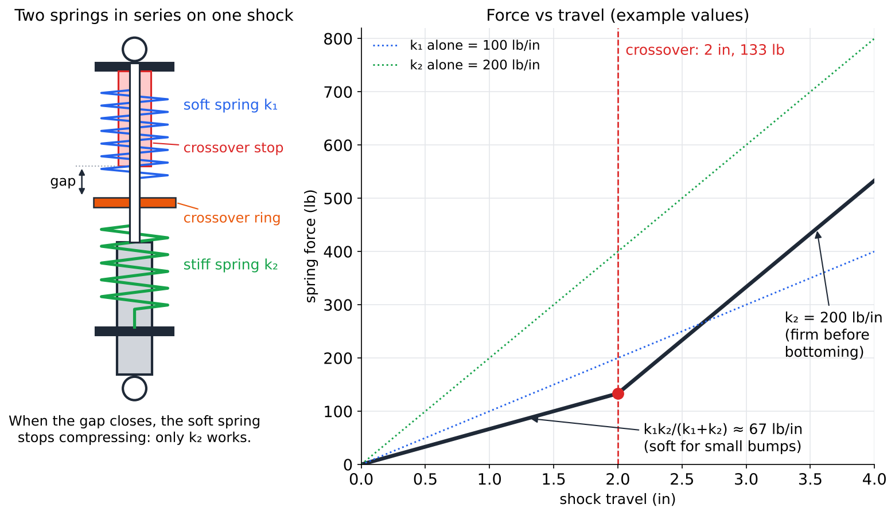
Deeper dive
Derivation: in series both springs carry the same force \(F\); deflections add: \(x = F/k_1 + F/k_2\). So \(1/k = 1/k_1 + 1/k_2\), or \(k = k_1k_2/(k_1+k_2)\). The result is always below the softer spring.
After crossover: the stop ring bottoms out on \(k_1\), so its deflection is frozen and only \(k_2\) works. Rate becomes \(k_2\). The force at crossover is \(k_{soft} \times x_{cross}\).
Example: \(k_1\) = 100, \(k_2\) = 200 lb/in → \(k_{soft}\) = 66.7 lb/in. Crossover at 2 in shock travel → 133 lb. Two equal springs in series give exactly half the rate.
Why: soft rate for small bumps and ride comfort, stiff rate before bottoming on big hits. Wheel rate is each value times \(MR^2\).
In the interview
Fits Baja: tender plus main springs on coilovers let the car stay supple at sag but not bottom on landings. Trap: series springs combine like parallel resistors, not added like parallel springs.
Imbalance\(F = m e \omega^2\)
An off-center mass on a spinning part pulls outward with a force that grows with speed squared. That force rotates, so the bearings see it as a once-per-rev vibration.
- \(F\): rotating imbalance force (N)
- \(m\): unbalanced mass (kg)
- \(e\): its offset from the spin axis (m)
- \(\omega\): spin speed (rad/s; rpm × 2π/60)
Deeper dive
Derivation: a mass on a circle of radius \(e\) has centripetal acceleration \(e\omega^2\). Something must push it inward with \(m e \omega^2\); the reaction pulls the shaft outward by the same amount.
Scaling: \(F \propto \omega^2\). This is why balance grades (ISO 21940, G-numbers) limit \(e\omega\): allowable offset shrinks as speed rises. Mass times offset (g·mm) is the usual unit for residual imbalance.
Resonance link: the forcing frequency is the shaft speed. If spin rate crosses a shaft or mount natural frequency, response is amplified by about \(Q\). Run well away from \(f_n\), or cross it quickly.
Example: \(m\) = 1 g, \(e\) = 50 mm, 10,000 rpm (1047 rad/s): \(F = 0.001 \times 0.05 \times 1047^2\) = 54.8 N, about 5.6 kg of force from a single gram.
In the interview
Directly relevant to combat robot spinner weapons: a small asymmetry at weapon speed loads bearings hard and shakes the robot. Trap: forgetting to convert rpm to rad/s.
Impact\(v = \sqrt{2gh} \qquad F_{avg} \approx \dfrac{KE}{d}\)
Drop from height \(h\) and you land at \(\sqrt{2gh}\). The average force to stop is the energy divided by the distance you stop over, so more stroke means less force.
- \(v\): impact speed (m/s, ft/s)
- \(g\): gravity, 9.81 m/s² (32.2 ft/s²)
- \(h\): drop height (m, ft)
- \(F_{avg}\): average stopping force (N, lb)
- \(KE\): kinetic energy at impact, \(\tfrac12mv^2 = mgh\) (J)
- \(d\): stopping distance (m)
Deeper dive
Derivation: energy conservation \(mgh = \tfrac12mv^2\) gives \(v\). Work-energy: \(F_{avg}\,d = KE\), so \(F_{avg} = KE/d\). Gravity keeps acting during the stop, so the ground force is \(KE/d + mg\).
Limits: real force is not flat. A linear spring absorbing \(KE\) peaks at \(2KE/d\), twice the average. Bottoming out drives \(d\) to near zero and the force spikes. Use a dynamic factor or a measured force trace.
Scaling: \(v \propto \sqrt h\), \(KE \propto h\). Double the drop → 2× energy and 2× average force for the same stroke; for a linear spring with free stroke, peak force grows only as about \(\sqrt h\).
Example: 227 kg Baja car (≈500 lb with driver) drops 1 m: \(v\) = 4.43 m/s, \(KE\) = 2.23 kJ. Over 0.25 m of travel, \(F_{avg}\) = 8.9 kN, 4 g, plus 1 g of weight on top.
In the interview
Typical Baja load case: drop height → landing energy → suspension travel → force into the frame. Trap: dividing by stopping time instead of distance without stating the assumption, or forgetting the 2× peak for a linear spring.
Spinning energy\(E = \tfrac12 I\omega^2\)
A spinning part stores kinetic energy that rises with its rotational inertia and with speed squared. It's the rotational version of \(\tfrac12mv^2\).
- \(E\): stored rotational energy (J)
- \(I\): mass moment of inertia about the spin axis (kg·m²)
- \(\omega\): spin speed (rad/s)
Deeper dive
Derivation: each bit of mass at radius \(r\) moves at \(v = \omega r\), so \(E = \sum\tfrac12 dm\,(\omega r)^2 = \tfrac12\omega^2\sum r^2dm = \tfrac12I\omega^2\).
Inertia: solid disc \(I = \tfrac12mR^2\); thin ring \(I = mR^2\); bar about its center \(I = \tfrac{1}{12}mL^2\). Mass at the rim counts most, since \(I\) goes with \(r^2\).
Scaling: double \(\omega\) → 4× energy. Double radius at the same mass → 4× \(I\) and 4× energy. Rim stress also scales with \(\rho\omega^2R^2\), which caps tip speed.
Example: 0.5 kg steel disc, \(R\) = 60 mm: \(I\) = 0.0009 kg·m². At 10,000 rpm (1047 rad/s), \(E\) = 493 J, roughly a 50 kg mass dropped 1 m.
In the interview
Core to combat robot weapon sizing: put mass at the rim, then trade spin-up time (motor power) against stored energy. Trap: confusing area moment of inertia (m⁴) with mass moment (kg·m²).
Ackermann\(\tan\delta_i = \dfrac{L}{R - t/2} \qquad \tan\delta_o = \dfrac{L}{R + t/2}\)
In a turn, the inside front wheel has a tighter circle to follow, so it must steer more than the outside one. These give each wheel's angle so both roll without scrubbing around one turn center.
- \(\delta_i, \delta_o\): inside and outside wheel steer angles (deg)
- \(L\): wheelbase (in, m)
- \(R\): turn radius to vehicle centerline at the rear axle (in, m)
- \(t\): front track width (in, m)
Deeper dive
Derivation: low-speed rolling with no slip means every wheel's axis passes through one point on the rear-axle line. The inside wheel sits \(R - t/2\) from that point, the outside \(R + t/2\); each is the base of a right triangle of height \(L\).
Example: \(L\) = 54 in, \(t\) = 50 in, \(R\) = 96 in: \(\delta_i = \arctan(54/71)\) = 37.3°, \(\delta_o = \arctan(54/121)\) = 24.1°. A 13° difference.
Assumptions: low speed, no tire slip angle. At speed the tires run slip angles and the ideal shifts; many race cars use partial or even reverse Ackermann. Percent Ackermann compares the real geometry to this ideal.
Building it: steering arms angled so their lines meet near the rear-axle center, plus rack position and tie-rod length, give approximate Ackermann through the travel.
In the interview
Ties into Armaan's steering rack and Baja steering geometry. Good follow-up: tight, low-speed courses push toward high Ackermann at full lock, where tire slip is small; mention bump steer as a separate tie-rod geometry concern.
Energy, power\(KE = \tfrac12 mv^2 \qquad P = Fv = T\omega\)
Kinetic energy is the work needed to get a mass to speed \(v\). Power is how fast work is done: force times speed for linear motion, torque times angular speed for rotation.
- \(KE\): kinetic energy (J)
- \(m\): mass (kg)
- \(v\): speed (m/s)
- \(P\): power (W)
- \(F\): force along the motion (N)
- \(T\): torque (N·m)
- \(\omega\): angular speed (rad/s)
Deeper dive
Derivation: \(W = \int F\,dx = \int m\frac{dv}{dt}dx = \int mv\,dv = \tfrac12mv^2\). Power \(P = dW/dt = F\,dx/dt = Fv\). For rotation, \(F\) at radius \(r\) gives \(T = Fr\) and \(v = \omega r\), so \(P = T\omega\).
Scaling: double speed → 4× energy, which is why stopping distance at constant braking force goes with \(v^2\). Gearing changes \(T\) and \(\omega\) but never \(P\) (minus losses).
Units: hp = T[lb·ft] × rpm / 5252; kW = T[N·m] × rpm / 9549. Torque and power curves in lb·ft and hp always cross at 5252 rpm.
Example: 1000 kg car at 20 m/s has 200 kJ. A motor making 20 N·m at 3000 rpm (314 rad/s) delivers 6.28 kW.
In the interview
Shows up as motor sizing: required torque at the output, times speed, gives power; then pick a gear ratio (Baja CVT, combat robot weapon reduction). Trap: plugging rpm into \(T\omega\).
Impulse\(F\Delta t = m\Delta v\)
Changing an object's momentum takes force applied over time. The same change in speed can come from a big force for a short time or a small force for a long time.
- \(F\): average force during the event (N)
- \(\Delta t\): contact or event duration (s)
- \(m\): mass (kg)
- \(\Delta v\): change in velocity, a vector (m/s)
Deeper dive
Derivation: integrate Newton's second law in time: \(\int F\,dt = \int m\,\frac{dv}{dt}\,dt = m\Delta v\). With a varying force, \(F\) here is the time average.
Impulse vs energy: impulse uses time and momentum; \(F_{avg} = KE/d\) uses distance and energy. Both are valid; use whichever you know (contact time from a high-speed video, or stopping distance from stroke). Momentum is conserved in collisions even when energy is lost.
Watch: \(\Delta v\) is a vector. A ball that bounces back at the same speed has \(\Delta v = 2v\), twice the impulse of one that stops. Peak force exceeds the average (π/2 times for a half-sine pulse).
Example: 1 kg at 10 m/s stopped in 10 ms: \(F_{avg}\) = 1000 N. Pad it to 100 ms: 100 N.
In the interview
Fits combat robot hits: weapon impulse sets how far the opponent is thrown, and longer contact (compliant armor mounts) lowers peak load. Trap: forgetting the rebound doubles \(\Delta v\).
ζ ≈ 1% bare metal (Q ≈ 50). Isolation needs f/f_n > √2, aim for 3+.
Fluids, thermo, heat transfer
Bernoulli\(P + \tfrac12\rho V^2 + \rho g z = \text{const}\)
Along a streamline in steady, frictionless, incompressible flow, pressure + kinetic energy per volume + potential energy per volume stays constant. Speed up the fluid and its pressure drops.
- \(P\): static pressure (Pa, psi)
- \(\rho\): fluid density (kg/m³)
- \(V\): flow speed (m/s)
- \(g\): gravity, 9.81 m/s²
- \(z\): elevation above a datum (m)
Deeper dive
It is energy conservation per unit volume. Integrate \(F=ma\) along a streamline (Euler's equation, \(dP/\rho + V\,dV + g\,dz = 0\)) with constant \(\rho\) and you get the three terms. Divide by \(\rho g\) to get it in heads (metres of fluid): \(P/\rho g + V^2/2g + z\).
Assumptions: steady, incompressible (gas below about Mach 0.3), no friction, no pump or turbine between the two points, same streamline. Real pipes lose head to friction, so add \(h_L\) on the outlet side; add a pump head on the inlet side.
Pressure change scales with \(V^2\): double the speed, four times the dynamic pressure. Example (figure): water goes from 1 m/s to 4 m/s in a venturi. \(\Delta P = \tfrac12(1000)(4^2 - 1^2) = 7.5\) kPa, or 0.76 m of water.
In the interview
Classic trap: "faster fluid has lower pressure" only holds along one streamline with no energy added. Don't use Bernoulli to explain wing lift by equal transit time; that argument is wrong.
Continuity\(\rho A V = \text{const}\)
Conservation of mass in a duct: the mass flow rate \(\dot m = \rho A V\) is the same at every cross-section in steady flow. Shrink the area and the fluid must speed up.
- \(\rho\): density (kg/m³)
- \(A\): cross-sectional area normal to flow (m²)
- \(V\): mean velocity over the section (m/s)
- \(\dot m\): mass flow rate (kg/s)
Deeper dive
Draw a control volume between two sections. In steady flow nothing accumulates inside, so mass in per second equals mass out: \(\rho_1 A_1 V_1 = \rho_2 A_2 V_2\). For a liquid \(\rho\) is constant, so volume flow \(Q = AV\) is constant.
V is the average velocity over the section, not the centerline peak. For gases, density changes with pressure and temperature, so keep \(\rho\) in; in supersonic flow area and speed go the opposite way (the diverging nozzle speeds the gas up).
Speed scales with \(1/D^2\) for round pipes: halve the diameter, 4x the speed. Example: 10 L/min of oil into a 50 mm bore cylinder. \(A = 1.96\times10^{-3}\) m², \(Q = 1.67\times10^{-4}\) m³/s, so the rod extends at \(Q/A \approx 85\) mm/s.
In the interview
Usually paired with Bernoulli: continuity gives the velocities, Bernoulli turns them into a pressure difference. Remember diameter enters squared.
Momentum\(\Sigma F = \Sigma(\dot m V)_{out} - \Sigma(\dot m V)_{in}\)
Newton's second law for a control volume: the net force on the fluid equals the momentum flowing out per second minus the momentum flowing in. Used for forces on pipe bends, nozzles, jets and vanes.
- \(\Sigma F\): net external force on the fluid in the control volume, including pressure forces at the cut faces (N)
- \(\dot m\): mass flow rate through each inlet/outlet (kg/s)
- \(V\): velocity vector at each inlet/outlet (m/s)
Deeper dive
Start from \(F = d(mV)/dt\) for a system and apply the Reynolds transport theorem. In steady flow the momentum stored inside doesn't change, so only the fluxes across the boundary count.
It is a vector equation: write one per axis with signs. \(\Sigma F\) includes pressure \(\times\) area at each cut, gravity, and the reaction from walls. Assumes uniform velocity across each port; for real profiles add a momentum correction factor (about 1.02 turbulent, 1.33 laminar).
Force scales with \(\dot m V = \rho A V^2\): double the speed, 4x the force. Example: a 25 mm water jet at 20 m/s hits a flat plate head-on and leaves sideways. \(\dot m = 1000 \times 4.91\times10^{-4} \times 20 = 9.8\) kg/s, so \(F = \dot m V \approx 196\) N.
In the interview
Common ask: force on the bolts of a 90° bend. Traps: forgetting the pressure forces at inlet and outlet, and mixing up force on the fluid with force on the pipe.
Pitot\(V = \sqrt{\dfrac{2(p_0 - p)}{\rho}}\)
A Pitot-static probe measures airspeed from the difference between stagnation pressure (flow brought to rest at the nose) and static pressure (side holes).
- \(V\): free-stream speed (m/s)
- \(p_0\): stagnation (total) pressure (Pa)
- \(p\): static pressure (Pa)
- \(\rho\): fluid density (kg/m³)
Deeper dive
Apply Bernoulli between the free stream and the nose stagnation point (same height, \(V = 0\) at the nose): \(p + \tfrac12\rho V^2 = p_0\). Solve for \(V\).
Assumes incompressible flow. At Mach 0.3 the true \(p_0 - p\) is about 2% higher than \(\tfrac12\rho V^2\), so the speed error is about 1%; above that use the compressible form. Misalignment with the flow, clogged ports, and using the wrong density (altitude, temperature) also cause error.
\(V \propto \sqrt{\Delta p}\): 4x the pressure difference is only 2x the speed. Example: air, \(\rho = 1.225\) kg/m³, \(\Delta p = 500\) Pa (51 mm of water). \(V = \sqrt{2(500)/1.225} \approx 28.6\) m/s.
In the interview
Know which hole reads what, and why it's a Bernoulli result. Aircraft airspeed indicators use this, and indicated vs true airspeed differs because of density.
Orifice\(\dot m = C_d A\sqrt{2\rho\,\Delta P}\)
Mass flow through an orifice or nozzle driven by a pressure drop. It is Bernoulli's ideal flow with a discharge coefficient that corrects for jet contraction and friction.
- \(\dot m\): mass flow rate (kg/s)
- \(C_d\): discharge coefficient (about 0.6 sharp-edged, 0.95-0.99 rounded)
- \(A\): orifice area (m²)
- \(\rho\): fluid density (kg/m³)
- \(\Delta P\): pressure drop across the orifice (Pa)
Deeper dive
Bernoulli gives jet speed \(V = \sqrt{2\Delta P/\rho}\) (ignoring the upstream velocity). Multiply by \(\rho A\) for the ideal \(\dot m = A\sqrt{2\rho\Delta P}\), then multiply by \(C_d\) to match reality. Some forms add \(1/\sqrt{1-\beta^4}\) for approach velocity, with \(\beta = d/D\).
Liquids or low-\(\Delta P\) gas flow. If a gas pressure ratio gets past about 0.53 the orifice chokes and flow stops depending on downstream pressure.
Flow scales with \(\sqrt{\Delta P}\): to double the flow you need 4x the pressure drop. Example: water, 10 mm sharp-edged hole, \(\Delta P = 200\) kPa. \(\dot m = 0.61 \times 7.85\times10^{-5} \times \sqrt{2(1000)(2\times10^5)} \approx 0.96\) kg/s.
In the interview
Tie-in to Baja shocks: a plain orifice gives \(\Delta P \propto Q^2\), so damper force rises with velocity squared. That is why dampers use shim stacks and bleed ports to shape the curve.
Pipe loss\(\Delta P = f\,\dfrac{L}{D}\,\dfrac{\rho V^2}{2} \quad f_{lam} = \dfrac{64}{Re}\)
Darcy-Weisbach: pressure lost to wall friction in a straight pipe. The friction factor \(f\) is \(64/Re\) for laminar flow and comes from the Moody chart for turbulent flow.
- \(\Delta P\): pressure drop (Pa)
- \(f\): Darcy friction factor (dimensionless)
- \(L\): pipe length (m)
- \(D\): inner diameter (m)
- \(\rho\): density (kg/m³)
- \(V\): mean velocity (m/s)
- \(Re\): Reynolds number
Deeper dive
Dimensional analysis says loss is proportional to dynamic pressure \(\rho V^2/2\) and to length in diameters \(L/D\); \(f\) holds the rest. For laminar flow, solving the parabolic profile exactly (Hagen-Poiseuille) gives \(f = 64/Re\).
Fully developed, steady flow. Turbulent \(f\) comes from Colebrook or the Moody chart and depends on \(Re\) and roughness \(\varepsilon/D\). Fittings and valves add minor losses \(K\rho V^2/2\). The Fanning factor is \(f/4\); check which one a table uses.
At fixed flow rate, laminar \(\Delta P \propto 1/D^4\) and turbulent \(\propto\) about \(1/D^5\). Example: water at 2 m/s in a smooth 25 mm pipe, 20 m long. \(Re = 50{,}000\), \(f \approx 0.021\), \(\Delta P = 0.021 \times 800 \times 2000 \approx 34\) kPa.
In the interview
Interviewers like the scaling: going up one pipe size cuts pressure drop a lot. Watch for Darcy vs Fanning (factor of 4) and for using 64/Re on turbulent flow.
Reynolds\(Re = \dfrac{\rho V D}{\mu} \;\;(\text{laminar} < 2300)\)
Ratio of inertial to viscous forces in a flow. In a pipe it predicts laminar flow below about 2300 and turbulent flow above about 4000.
- \(Re\): Reynolds number (dimensionless)
- \(\rho\): density (kg/m³)
- \(V\): mean velocity (m/s)
- \(D\): pipe diameter, or other length scale (m)
- \(\mu\): dynamic viscosity (Pa·s); \(\nu = \mu/\rho\) is kinematic viscosity (m²/s)
Deeper dive
Inertial force scales like \(\rho V^2 D^2\) and viscous force like \(\mu V D\); their ratio is \(\rho V D/\mu\). Two flows with the same \(Re\) and geometry behave the same, which is why scale models and wind tunnels work.
2300 is for internal pipe flow based on diameter. Between 2300 and 4000 it is transitional. Other geometries use other lengths and thresholds: a flat plate transitions around \(Re_x \approx 5\times10^5\).
\(Re\) is linear in \(V\) and \(D\). Example: water (\(\nu = 1.0\times10^{-6}\) m²/s) at 1 m/s in a 10 mm tube: \(Re = 1(0.01)/10^{-6} = 10{,}000\), turbulent. Most everyday water and air flows are turbulent; laminar shows up with small channels, slow flow, or viscous oils.
In the interview
First question to ask on any fluids problem: laminar or turbulent? It picks the friction factor and the heat transfer correlation. Trap: quoting 2300 for external flow over a body.
Ideal gas\(PV = mRT \qquad c_p = c_v + R\)
Ideal gas law in mass form: pressure, volume and absolute temperature of a gas are tied together through its specific gas constant. The second relation links the two specific heats.
- \(P\): absolute pressure (Pa)
- \(V\): volume (m³)
- \(m\): mass of gas (kg)
- \(R\): specific gas constant, \(R_u/M\) (air: 287 J/kg·K)
- \(T\): absolute temperature (K)
- \(c_p, c_v\): specific heats at constant pressure / volume (J/kg·K)
Deeper dive
Same as \(PV = nR_uT\) with \(n = m/M\) and \(R = R_u/M\), where \(R_u = 8.314\) J/mol·K. For an ideal gas, enthalpy is \(h = u + Pv = u + RT\); differentiate with respect to \(T\) and you get \(c_p = c_v + R\).
Holds well when the gas is far from condensing (low pressure, high temperature compared with the critical point). Breaks down for dense gases, near phase change, or very high pressures (use a compressibility factor \(Z\)).
Air: \(c_p = 1005\), \(c_v = 718\), difference 287 J/kg·K, \(\gamma = 1.4\). Example: a tire at 30 psig and 20°C heats to 50°C at fixed volume. Use absolute: 44.7 psia × 323/293 = 49.3 psia, so about 34.6 psig.
In the interview
The two big traps: using gauge pressure or °C instead of absolute pressure and kelvin, and mixing up the universal and specific gas constants.
Mach\(M = \dfrac{V}{\sqrt{\gamma R T}}\)
Mach number is flow speed divided by the local speed of sound. It tells you how compressible the flow is.
- \(M\): Mach number (dimensionless)
- \(V\): flow or vehicle speed (m/s)
- \(\gamma\): ratio of specific heats \(c_p/c_v\) (air 1.4)
- \(R\): specific gas constant (air 287 J/kg·K)
- \(T\): absolute static temperature (K)
Deeper dive
Sound is a small isentropic pressure wave, so \(a^2 = (\partial P/\partial\rho)_s = \gamma P/\rho = \gamma R T\) for an ideal gas. Speed of sound depends only on temperature for a given gas, not on pressure.
Regimes: below 0.3 treat as incompressible (density changes under about 5%); 0.3-0.8 subsonic compressible; about 0.8-1.2 transonic; above 1 supersonic, with shocks. Use the local static temperature, not the stagnation temperature.
\(a \propto \sqrt{T}\). Sea level, 288 K: \(a = \sqrt{1.4(287)(288)} \approx 340\) m/s. At 11 km, 217 K: \(a \approx 295\) m/s, so an aircraft at 250 m/s there flies at \(M \approx 0.85\).
In the interview
Know that a converging nozzle maxes out at M = 1, and you need a diverging section to go supersonic. Also why Mach 0.3 is the cutoff for using Bernoulli on air.
Conduction\(q = \dfrac{kA\,\Delta T}{L}\)
Fourier's law for steady 1D conduction through a flat wall: heat flow is proportional to conductivity, area and temperature difference, and inversely proportional to thickness.
- \(q\): heat flow rate (W)
- \(k\): thermal conductivity (W/m·K)
- \(A\): area normal to heat flow (m²)
- \(\Delta T\): temperature difference across the wall (K or °C)
- \(L\): wall thickness (m)
Deeper dive
Fourier's law is \(q = -kA\,dT/dx\). In a wall with steady heat flow and no internal heat generation, \(q\) is the same at every \(x\), so \(dT/dx\) is constant and \(T\) is linear: \(dT/dx = -\Delta T/L\).
Write it as \(q = \Delta T/R\) with \(R = L/kA\). Layers in series add resistances, and surface convection adds \(1/hA\). Breaks down for transients (use \(\rho c_p\), Biot number), for heat generation, and for 2D geometry. Cylinders use \(R = \ln(r_2/r_1)/(2\pi k L)\).
Double the thickness, half the heat. Typical \(k\): aluminum about 200, steel about 50, stainless about 16, foam insulation about 0.04 W/m·K. Example: 50 mm of foam, 1 m², 20 K: \(q = 0.04(1)(20)/0.05 = 16\) W.
In the interview
Expect a composite wall or pipe insulation question; draw the resistor network. Often a thin metal wall's resistance is negligible next to the air-side convection resistance.
Convection\(q = hA\,\Delta T\)
Newton's law of cooling: heat moving between a surface and a fluid flowing past it. All the physics is packed into the convection coefficient \(h\).
- \(q\): heat flow rate (W)
- \(h\): convection coefficient (W/m²·K)
- \(A\): wetted surface area (m²)
- \(\Delta T\): surface temperature minus fluid temperature far away, \(T_s - T_\infty\) (K)
Deeper dive
It is a definition more than a derived law. Heat at the wall conducts through a thin boundary layer, and \(h\) is roughly \(k_{fluid}\) divided by the thermal boundary layer thickness. Faster flow makes a thinner layer and a bigger \(h\).
Typical \(h\): free convection in air 5-25; forced air 25-250; forced water about 100-20,000; boiling or condensing 2,500-100,000 W/m²·K. \(h\) isn't a material property; it changes with velocity, geometry and orientation, and is often only good to ±25%.
Linear in \(h\), \(A\) and \(\Delta T\). Example: a motor case with 0.05 m² of surface running 40 K above ambient. Still air (\(h \approx 10\)): \(q = 10(0.05)(40) = 20\) W. A fan bringing \(h\) to 50 gives 100 W. Fins add area.
In the interview
Common question: how do you cool something better? Raise \(h\) (fan, liquid), raise \(A\) (fins), or raise \(\Delta T\). Know rough \(h\) ranges by order of magnitude.
Radiation\(q = \varepsilon\sigma A\left(T^4 - T_\infty^4\right)\)
Net radiation exchange between a small gray surface and large surroundings. It goes with the fourth power of absolute temperature and needs no medium.
- \(q\): net radiated heat (W)
- \(\varepsilon\): surface emissivity, 0-1
- \(\sigma\): Stefan-Boltzmann constant, \(5.67\times10^{-8}\) W/m²·K⁴
- \(A\): radiating area (m²)
- \(T, T_\infty\): surface and surroundings temperatures, absolute (K)
Deeper dive
A blackbody emits \(\sigma T^4\) per unit area (Stefan-Boltzmann, from integrating Planck's law). A gray surface emits \(\varepsilon\) of that and absorbs the same fraction of what the surroundings send back, giving the net \(\varepsilon\sigma A(T^4 - T_\infty^4)\).
This form needs the surroundings to be large or black, so view factors drop out. Between two finite surfaces you need view factors and both emissivities. Sunlight on a spacecraft adds absorbed solar flux (set by absorptivity \(\alpha\)), so coatings are picked for low \(\alpha\) and high \(\varepsilon\).
Double the absolute temperature: 16x the emission. Example: a 1 m² radiator at 300 K with \(\varepsilon = 0.85\) facing deep space (3 K): \(q = 0.85(5.67\times10^{-8})(300^4) \approx 390\) W. Linearized, \(h_{rad} = 4\varepsilon\sigma T^3 \approx 5\) W/m²·K here, comparable to free convection.
In the interview
Using °C instead of kelvin is the classic mistake. A SpaceX-style question: how do you reject heat in space? Radiators sized with this equation, fed by heat pipes or a pumped loop.
Rocket eq.\(\Delta V = V_e \ln\dfrac{m_0}{m_f}\)
Tsiolkovsky rocket equation: the velocity change a rocket gets depends only on exhaust velocity and the ratio of starting mass to final mass.
- \(\Delta V\): velocity change (m/s)
- \(V_e\): effective exhaust velocity, \(I_{sp}\,g_0\) (m/s)
- \(m_0\): initial mass with propellant (kg)
- \(m_f\): final (dry) mass after the burn (kg)
Deeper dive
Momentum balance on the rocket in free space: in time \(dt\) it ejects mass \(-dm\) at \(V_e\) backward, so \(m\,dV = -V_e\,dm\). Integrate from \(m_0\) to \(m_f\): \(\Delta V = V_e\ln(m_0/m_f)\).
Assumes no gravity or drag during the burn and constant \(V_e\). Real launch needs about 9.3-9.5 km/s to reach LEO because gravity and drag losses add 1.5-2 km/s on top of the 7.8 km/s orbital speed.
Mass ratio grows exponentially with \(\Delta V\): \(m_0/m_f = e^{\Delta V/V_e}\). Example: \(V_e = 3000\) m/s (\(I_{sp} \approx 306\) s), mass ratio 10: \(\Delta V = 3000\ln 10 \approx 6.9\) km/s. Reaching 9.4 km/s single-stage with kerolox needs a ratio of about 24, which is why rockets stage.
In the interview
Explain why staging works and why every kilogram of dry structure matters; this is the reason structures teams chase mass. Know \(V_e = I_{sp}\,g_0\).
Thrust\(T = \dot m V_e + (P_e - P_\infty)A_e\)
Rocket engine thrust is the momentum of the exhaust plus a pressure term from the exit plane. The pressure term is positive when the exhaust leaves above ambient pressure.
- \(T\): thrust (N)
- \(\dot m\): propellant mass flow rate (kg/s)
- \(V_e\): exhaust velocity at the nozzle exit (m/s)
- \(P_e\): nozzle exit pressure (Pa)
- \(P_\infty\): ambient pressure (Pa)
- \(A_e\): nozzle exit area (m²)
Deeper dive
Draw a control volume around the engine and apply the momentum equation. Momentum leaves only through the exit at \(\dot m V_e\). The pressure around the outside is \(P_\infty\) everywhere except the exit plane, where it is \(P_e\), which adds \((P_e - P_\infty)A_e\).
Peak thrust for a given chamber comes when \(P_e = P_\infty\) (ideal expansion). A nozzle sized for vacuum would be badly over-expanded at sea level and its flow could separate, so sea-level engines use short nozzles while vacuum engines use huge expansion ratios because \(P_\infty = 0\). Specific impulse is \(I_{sp} = T/(\dot m g_0)\).
Example (figure): \(\dot m = 300\) kg/s, \(V_e = 3000\) m/s, \(A_e = 1\) m², \(P_e = 50\) kPa. Momentum term 900 kN. Sea level: \(900 + (50 - 101.3)(1) \approx 849\) kN. Vacuum: 950 kN. Ideal expansion near 6 km.
In the interview
Know why sea-level and vacuum versions of the same engine have different nozzles, and why thrust and \(I_{sp}\) rise with altitude. Note \(T\) here is thrust, not temperature.
Choked when p*/p₀ ≈ 0.53 (air). Kelvin for gas and radiation; σ = 5.67×10⁻⁸. Bi = hL/k_solid < 0.1 → lumped.
Materials
| E GPa | ρ g/cc | σy MPa | α µ/°C | |
|---|---|---|---|---|
| Steel (A36 / 4130 N) | 200 | 7.85 | 250 / 435 | 12 |
| Al 6061-T6 | 69 | 2.70 | 276 | 23 |
| Al 7075-T6 | 71 | 2.81 | ~500 | 23 |
| Ti-6Al-4V | 114 | 4.43 | ~880 | 8.6 |
| Inconel 718 | 200 | 8.2 | ~1035 | 13 |
E/ρ ≈ 26 for steel, Al, Ti. Strength changes with alloy and temper; E barely does. Yield strain: mild steel 0.125%, 6061 0.4%.
Units
| 1 in = 25.4 mm | 1 lbf = 4.45 N |
| 1 lbm = 0.454 kg | 1 ksi = 6.895 MPa |
| 1 MPa = 145 psi | 1 psi = 6,895 Pa |
| 1 ft·lbf = 1.356 N·m | 1 in·lbf = 0.113 N·m |
| g = 9.81 m/s² = 32.2 ft/s² | = 386 in/s² |
| °C = (°F − 32)/1.8 | Δ180°F = Δ100°C |
Traps and answer patterns
Load sharing
- Forced equal deflection → load follows stiffness (EA or EI). Two tubes on rigid plates: steel takes 74%.
- Compare strains, not stresses when strain is shared: stiff steel yields first (0.125% vs 0.4%).
- 3 legs, centered load = statically determinate: W/3 each, hub tilts. Give stiffness answer, then the caveat.
- Thermal mismatch: high-α part ends in compression. σ = Δα·ΔT/(1/E₁ + 1/E₂) for equal areas.
- Diameter doesn't matter for axial load; it matters for buckling.
Beams and failure
- Cantilever breaks at the wall; down load → top in tension, cracks start there.
- Breaking load needs strength (σy or σu), not E.
- Thin tube → local buckling on compression side first.
- One-way bending → I-beam, tapered. Torsion or any direction → closed round tube.
- Hoop = 2× axial → crack runs lengthwise.
- Stronger alloy ≠ more buckling-resistant (same E).
- Hydrostatic pressure doesn't yield metal.
Bolts and wheels
- Never threads in shear. Shear: shoulder > partial > full.
- Shoulder bolt weakest in tension (smaller thread + undercut).
- Bolts fail at the first engaged thread.
- More friction under the nut → torque more (same torque = less preload).
- Lugs: star pattern, even. Lost nuts → borrow one from each wheel.
- Preload, not friction, holds the joint; preload cuts bolt fatigue.
FEA, testing, loads
- Hot spot real? Region vs single node · refine mesh: singularity keeps climbing · hand calc · strain gauge.
- Chassis IMU ≠ unsprung loads (quarter car; wheel hop 10–15 Hz vs body 1–3 Hz).
- Drop scaling: energy ∝ h, linear-spring force ∝ √h (3.5 → 4.5 ft = +13%).
- Static FEA for impact: use energy/stopping distance or a dynamic factor.
- Mass production: fewer setups → near-net (cast/forge/mold). Inspect critical features → sample + SPC once capable.
How to answer
- Restate, state assumptions out loud.
- Simple first question is usually just simple.
- Start from fundamentals: FBD → equilibrium → compatibility → material law.
- Sanity check units and order of magnitude.
- Leading follow-up = a hint. Pause; don't defend the old path.
- Don't know? Say what you'd look up or test, then reason it out.
Vehicle / suspension terms
- Bump steer: toe change with travel (tie rod off the arm line)
- Camber gain: camber vs travel; target from roll gradient
- Caster → mechanical trail → steering effort & self-centering
- Ackermann: inside wheel steers more, one turn center
- Motion ratio = shock travel / wheel travel
- Ride freq f = (1/2π)√(k_wheel/m_corner)
- c-factor = rack travel per pinion rev
Ask them
Questions to ask
- What's the hardest technical problem your team is working on right now?
- What did you personally build or analyze recently?
- What does success look like for a new engineer in the first six months?
- What parts or structures would I most likely own?
- How closely do design engineers work with test and the shop floor?
- How are load cases set and validated here: analysis, test, or flight/field data?
- What do you wish new hires already knew?
Pick 2 or 3 before the call, then actually listen. Follow up on something they said.
Closing
- Thank them; one sentence on why this role fits (owning hardware from load case to test).
- Ask about next steps and timeline.
- Write down what they asked right after, and add it to the study site.